Über dieses Handbuch
Dieses Projekt ergänzt die API-Dokumentation zur Qwt-Bibliothek und bietet sowas wie ein Programmiererhandbuch mit vielen Details zu den Internas der Bibliothek. Der Fokus liegt aber ganz klar auf der QwtPlot Diagrammkomponente.
Das ist übrigends schon die 2. Auflage (komplett neu überarbeitet), weil es zum Zeitpunkt der ersten Ausgabe noch kein tolles AsciiDoc gab und ich irgendwie beim Textschreiben hängengeblieben bin.
Die englische Version und die PDF-Variante gibt’s hier: https://ghorwin.github.io/qwtbook.
Die Texte und Bilder stehen unter der Creative-Commons BY-NC Lizenz (siehe Lizenztext im Qwt Handbuch Repository https://github.com/ghorwin/QwtBook), können also frei verwendet, modifiziert und angepasst werden, aber bitte nicht publiziert oder zum Training von kommerziellen KI-Systemen benutzt werden. Alle Quelltextbeispiele, sowohl im Text, als auch in den herunterladbaren Tutorial/Beispiel-Quelltextarchiven, stehen unter der MIT-Lizenz und können damit in open-source wie auch kommerziellen Projekten genutzt werden.
|
Häufig wird das |
Viel Spaß bei der Lektüre - und falls noch Inhalte fehlen, einfach Geduld haben und später wiederkommen (oder im Github-Repo ein Issue anlegen). Und schaut Euch vielleicht auch meine anderen Tutorials unter https://schneggenport.de an!
— Andreas Nicolai
1. Überblick über die Qwt Bibliothek
Qwt - Qt Widgets for Technical Applications ist eine Open-Source Bibliothek für technische Anwendungen und stellt
bestimmte Widgets für Anzeigen und Kontrollkomponenten bereit. Die wohl wichtigste Komponente der Qwt Bibliothek ist das QwtPlot,
eine sehr flexible und mächtige Diagrammkomponente.

Die Qwt Bibliothek steht unter einer Open-Source-Lizenz, wurde und wird aktiv vom Entwickler Uwe Rathmann gepflegt und wird auf SourceForge.net gehostet:
1.1. Entwicklungsgeschichte
-
die erste Version der Qwt-Bibliothek stammt noch aus dem Jahr 1997 von Josef Wilgen
-
seit 2002 wird die Bibliothek von Uwe Rathmann entwickelt und gepflegt
-
Version 5 ist wohl am weitesten verbreitet (erstes Release vom 26.02.2007)
-
Version 6 (erstes Release vom 15.04.2011, kein Qt3 Support mehr) enthält wesentliche API-Änderungen
-
aktuelle stabile Version 6.3.0 (Stand Mai 2025)
-
im trunk gibt es zum Teil bereits wesentlich mehr und fortgeschrittene Funktionen
1.1.1. Download der Bibliothek
Die Qwt Bibliothek kann von der Qwt SourceForge Projektseite als Quelltextarchiv geladen werden. Unter Linux wird Qwt bei vielen Distributionen als Paket gehalten. Genau genommen gibt es mehrere Pakete für die unterschiedlichen Qwt-Bibliotheksversionen bzw. Qt Versionen. Details zur Installation und Verwendung der Bibliothek gibt es im Kapitel 17.
1.2. Widget-Konzept und Erscheinungsbild
Die Qwt Bibliothek liefert Komponenten, welche analog zu den normalen Qt-Widgets in Desktopanwendungen verwendet werden können. Die Komponenten verwenden die Qt Palette, sodass die Qwt-Widgets in die jeweilige Oberfläche passen. Dadurch integrieren sich die Widgets nahtlos in Programmoberflächen. Einzelne Komponenten des QwtPlot unterstützen auch Styles. So ermöglichen z.B. Abrundungseffekte beim Plot-Widget das Immitieren klassischer Anzeigen.

Details zum Styling und zur Anpassung des Erscheinungsbildes sind im Kapitel 14 zu finden.
1.3. Besitzer/Eigentümer-Konzept des QwtPlot-Widgets
Eine grundlegende Eigenschaft der QwtPlot-Klasse ist die Besitzübername hinzugefügter Elemente. Dies gilt allgemein für alle Elemente des Plots (Linien, Marker, Legende, …). D.h. nach Übertragung der Eigentümerschaft kümmert sich das QwtPlot um das Aufräumen des Speichers.
Einmal hinzugefügte Elemente werden nicht wieder losgelöst werden (bzw. nur über einen Trick, wie im Kapitel 16.1 beschrieben wird). Daher ist es sinnvoll, bei veränderlichen Diagrammelementen einen Mechanismus zur jeweiligen Neuerstellung eines Zeichenobjekts vorzusehen (Factory-Konzept).
1.4. Zeichenobjekte und deren Achsenabhängigkeit
Ein wesentliches Designmerkmal beim QwtPlot ist die Möglichkeit, beliebige Zeichenobjekte (Kurven, Marker, Legende, …) dem Plot zu übergeben. Damit sich diese Zeichenobjekte (engl. PlotItem) am Koordinatengitter ausrichten können, wird ihnen eine Achsenabhängigkeit gegeben. Dadurch erhalten diese Zeichenobjekte eine Information, wann immer sich die Achsenskalierung ändert (durch Zoomen, oder Änderung der Wertebereiche etc.).
Diese Funktionalität definiert die zentrale Bedeutung der (bis zu) 4 Achsen im Diagramm. Deswegen sind diese auch fest im QwtPlot verankert und werden nicht wie andere Zeichenobjekte beliebig hinzugefügt.
1.5. Vererbungskonzept
Grundsätzlich ist das QwtPlot und die beteiligten Klassen auf maximale Anpassungsfähigkeit ausgelegt, d.h. es wird (fast) überall Polymorphie unterstützt. Wenn die eingebaute Funktionalität nicht zureichend ist, kann man einfach immer die entsprechende Klasse ableiten und die jeweils anzupassende Funktion re-implementieren und verändern. Dies wird anhand von Beispielen in den individuellen Kapiteln des Handbuchs beschrieben.
1.6. Qwt Designer Plugins
Die Qwt Bibliothek bringt Plugins für Qt Designer bzw. Qt Creator mit, welche das Einfügen von Qwt-Komponenten in ui-Dateien erleichtert. Es lassen sich jedoch keine QwtPlot-Eigenschaften festlegen oder Kurven hinzufügen. Die eigentliche Anpassung und Ausgestaltung des Plots erfolgt im Quelltext.
|
Die API der Qt Designer Plugins hat sich in jüngeren Qt Creator-Versionen geändert, weswegen die Qwt Designer Plugins mit aktuellen Qt und Qt Creator Versionen nicht mehr funktionieren selbst wenn man die mit den passenden Bibliotheksversionen kompiliert. |
Auch deswegen wird die Konfiguration und Anpassung des QwtPlot in diesem Handbuch ausschließlich durch normale API-Aufrufe demonstriert.
|
Soll das |
2. Erste Schritte und ein interaktives Diagramm
Um mit der Qwt-Bibliothek warm zu werden, erstellen wir in einem einfachen Beispiel ein interaktives Diagramm mit der QwtPlot-Komponente.
Der komplette Beispielquelltext ist als 7z-Archiv herunterladbar: tutorial1.7z
2.1. Programmrohbau
2.1.1. QMake Projektdatei
Wir beginnen mit der qmake-Projektdatei, in der wir den Pfad für die Header-Dateien der Bibliothek und die zu linkende Bibliothek festlegen. Hier gehe ich davon aus, dass Qwt aus dem 6.3.0er Quelltextarchiv gebaut und lokal in die Standardverzeichnisse (C:\qwt-6.3.0 unter Windows und /usr/local/qwt-6.3.0 unter Linux/Mac) installiert wurde. Infos über das Compilieren der Bibliothek aus dem Quelltext und Installation gibt es in Kapitel 17.
TARGET = Tutorial1
QT += core gui widgets
CONFIG += c++11
win32 {
# Pfad zu den Qwt Headerdateien hinzufügen
INCLUDEPATH += C:/qwt-6.3.0/include
CONFIG(debug, debug|release) {
QWTLIB = qwtd
}
else {
QWTLIB = qwt
}
# Linkerpfad
LIBS += -LC://qwt-6.3.0/lib -l$$QWTLIB
}
else {
# Pfad zu den Qwt Headerdateien hinzufügen
INCLUDEPATH += /usr/local/qwt-6.3.0/include/
# Linkerpfad, unter Linux wird standardmäßig nur die release-Version der Lib gebaut und installiert
LIBS += -L/usr/local/qwt-6.3.0/lib -lqwt
}
SOURCES += main.cppDies ist eine .pro-Datei für eine Qwt-6.3.0-Installation aus dem Quelltext mit Standardeinstellungen (siehe Kapitel 17.2).
|
Beachte, dass die im Debug-Modus kompilierte Qwt-Bibliothek ein angehängtes d hat. Unter Linux wird standardmäßig nur die release-Version gebaut und installiert, daher braucht man hier die Fallunterscheidung nicht. |
2.1.2. Minimalistisches Hauptprogramm
Für die Verwendung des QwtPlot braucht man nur eine sehr minimalistische main.cpp.
#include <QApplication>
#include <QwtPlot>
int main(int argc, char *argv[]) {
QApplication a(argc, argv);
QwtPlot plot;
plot.resize(800,500);
plot.show();
return a.exec();
}|
Wenn man das Programm compiliert hat und ausführen will, beklagt sich Windows über eine fehlende DLL.
Dazu in den Projekteinstellungen, unter "Ausführen", im Abschnitt "Umgebung" die PATH-Variable bearbeiten und dort den Pfad |
Das Programm zeigt ein ziemlich langweiliges (und hässliches) Diagrammfenster (später wird das noch ansehnlicher gestaltet).
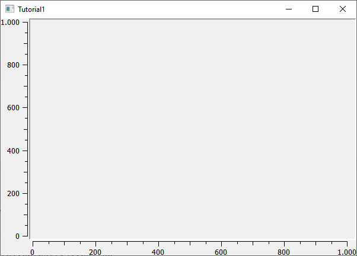
|
Ein Hinweis zu den Header-Dateien der Qwt-Bibliothek. Analog zu Qt Klassen werden die Qwt-Klassen über den gleichnamigen Header eingebunden, also: Diese Header-Dateien sind aber nur Wrapper um die eigentlichen Include-Dateien, mit dem Benennungsschema: In früheren Versionen der Qwt-lib (auch der Debian-Paket-Version |
2.2. Diagrammelemente hinzufügen
2.2.1. Linie hinzufügen
Als erstes fügen wir eine Linie bzw. Diagrammkurve hinzu (Header QwtPlotCurve bzw. qwt_plot_curve.h):
#include <QApplication>
#include <QwtPlot>
#include <QwtPlotCurve>
int main(int argc, char *argv[]) {
QApplication a(argc, argv);
QwtPlot plot;
plot.resize(500,300);
// etwas Abstand zwischen Rand und Achsentiteln
plot.setContentsMargins(8,8,8,8);
// Hintergrund der Zeichenfläche soll weiß sein
plot.setCanvasBackground( Qt::white );
// Daten zum Darstellen einlesen
QVector<double> x, y;
QFile f("spektrum.tsv"); // Datei enthält 2 Spalten
f.open(QFile::ReadOnly);
QTextStream strm(&f);
strm.readLine(); // Kopfzeile überspringen
while (!strm.atEnd()) {
double xval, yval;
strm >> xval >> yval;
x.append(xval);
y.append(yval);
}
QwtPlotCurve *curve = new QwtPlotCurve();
curve->setPen(QColor(180,40,20), 0);
curve->setTitle("Gamma-Spektrum");
curve->setRenderHint( QwtPlotItem::RenderAntialiased, true ); // Antialiasing verwenden
curve->setSamples(x, y);
curve->attach(&plot); // Plot takes ownership
plot.show();
return a.exec();
}Im erweiterten Hauptprogramm wird zunächst der Header für die QwtPlotCurve eingebunden. Das Kurvenobjekt selbst wird mit new auf dem Heap erstellt. Die Daten der Kurve lesen wir aus einer Textdatei (2 Spalten, mit Kopfzeile) aus. Die Datei spektrum.tsv ist im Archiv des Tutorialquelltextes enthalten.
|
Grundsätzlich gilt beim |
Attribute wie Linienfarbe, Titel (wird später in der Legende angezeigt), und Antialising werden gesetzt (im Kapitel 5 werden alle Eigenschaften von Linien im Detail erläutert).
Die Funktion setSamples() setzt die Daten der Linie. Wichtig ist hier, dass die übergebenen Vectoren die gleiche Länge haben. Es handelt sich um eine parametrische Kurve, d.h. weder x noch y Werte müssen monoton sein oder sonstwelchen Regeln folgen. Jedes x,y Wertepaar definiert einen Punkt und diese Punkte werden mit der Linie verbunden.
Die Funktion attach() fügt das QwtPlotCurve-Objekt zum Diagramm hinzu.
|
Beim Hinzufügen der Linie mittels |
Zusätzlich zu dem Code, welcher die Linie hinzufügt, wurden noch 2 kleine Anpassungen am Erscheinungsbild vorgenommen:
-
Ränder wurden mittels
setContentsMargins()hinzugefügt (siehe auchQWidgdet::setContentsMargins()) -
der Hintergrund der Zeichenfläche (canvas) wurde weiß gefärbt.
Das Ergebnis sieht schon eher nach Diagramm aus.

2.2.2. Legende hinzufügen
Als nächstes wird eine Legende eingefügt (Header QwtLegend bzw. qwt_legend.h):
// Legende anzeigen
QwtLegend * legend = new QwtLegend();
QFont legendFont;
legendFont.setPointSize(8);
legend->setFont(legendFont);
plot.insertLegend( legend , QwtPlot::BottomLegend); // plot takes ownershipAuch hier wird oben wieder der Header für die Klasse QwtLegend eingebunden.
Die Legende bekommt hier noch einen veränderten Font. Das weitere Anpassen der Legende wird in Kapitel 9 beschrieben.
Die Legende kann links, rechts, oberhalb oder unterhalb der Zeichenfläche liegen, oder in der Zeichenfläche selbst. Die Platzierung wird beim Aufruf von insertLegend() festlegegt.
Das Plot nimmt beim Aufruf von insertLegend() wiederum Besitz vom Legendenobjekt und kümmert sich um das Aufräumen des Speichers.
2.2.3. Diagrammtitel hinzufügen
// Titel hinzufügen
QwtText text("Gamma-Spektrum");
QFont titleFont;
titleFont.setBold(true);
titleFont.setPointSize(10);
text.setFont(titleFont);
plot.setTitle(text);Die Klasse QwtText (Header QwtText bzw. qwt_text.h) kapselt einen QString und ergänzt Funktionalität zum Rendern von mathematischen Symbolen mittels MathML (siehe Kapitel 12.1).
2.2.4. Diagrammraster hinzufügen
Gitterlinien werden durch das Zeichenobjekt QwtPlotGrid gezeichnet (Header QwtPlotGrid bzw. qwt_plot_grid.h):
// Haupt- und Nebengitter anzeigen
QwtPlotGrid *grid = new QwtPlotGrid();
QPen gridPen(Qt::gray);
gridPen.setStyle(Qt::DashLine);
grid->setMajorPen(gridPen);
// Minor grid
grid->enableYMin( true );
gridPen.setColor(Qt::lightGray);
gridPen.setStyle(Qt::DotLine);
grid->setMinorPen(gridPen);
grid->attach( &plot ); // plot takes ownershipDas Raster selbst kann hinsichtlich der Stifts (QPen) für das Haupt- und Nebengitter angepasst werden. Die Funktion enableYMin() schaltet das Nebengitter für die Y-Achse ein.
Wie auch bei den Plotkurven übergibt attach() das QwtPlotGrid Objekt an das QwtPlot, welches sich dann um die Speicherverwaltung kümmert.
|
Ein Raster wird standardmäßig an eine x- und y-Achse gebunden, wobei man aber auch die Gitterlinien für eine der Achsen ausblenden kann. Wenn man z.B. ein Diagramm mit 2 y-Achsen hat und für jede ein Gitterraster anzeigen möchte (auch wenn das meistens verwirrend aussieht), dann braucht man zwei |
Inzwischen sieht das Diagramm schon ganz ansehnlich aus.
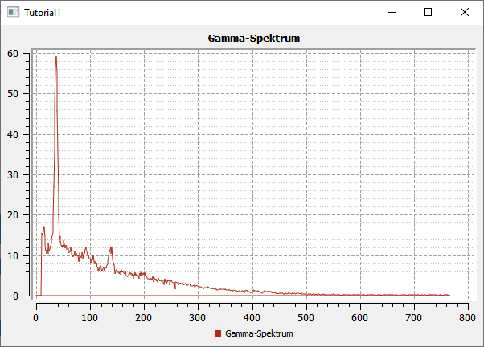
2.2.5. Achsenkonfiguration
Das QwtPlot hat 4 Achsen eingebaut, genannt:
-
QwtPlot::yLeftundQwtPlot::yRight -
QwtPlot::xBottomundQwtPlot::xTop
Standardmäßig sind die Achsen xBottom und yLeft sichtbar, wie im bisher verwendeten Plot.
Jedes Zeichenelement im Plot (Kurven, Marker, …) wird einer oder mehrerer Achsen zugeordnet. In unserem Einführungsbeispiel verwendet die QwtPlotCurve standardmäßig die Achsen xBottom und yLeft.
Die Achsen können wie folgt konfiguriert werden.
// Achsen formatieren
QFont axisFont;
axisFont.setPointSize(8);
axisFont.setBold(true);
QFont axisLabelFont;
axisLabelFont.setPointSize(8);
// X-Achse
QwtText axisTitle("Kanal");
axisTitle.setFont(axisFont);
// Titel Text und Font setzen
plot.setAxisTitle(QwtPlot::xBottom, axisTitle);
// Font für Achsenzahlen setzen
plot.setAxisFont(QwtPlot::xBottom, axisLabelFont);
// Y-Achse
axisTitle.setText("Ereignisse");
plot.setAxisTitle(QwtPlot::yLeft, axisTitle);
plot.setAxisFont(QwtPlot::yLeft, axisLabelFont);Der Titel jeder Achse wird wiederum über ein QwtText-Objekt (enthält Text und Font) gesetzt.
Der Font für die Zahlen an den Achsen selbst wird über setAxisFont() geändert.
Die Achsen selbst lassen sich vielfältig anpassen, siehe Kapitel 11.
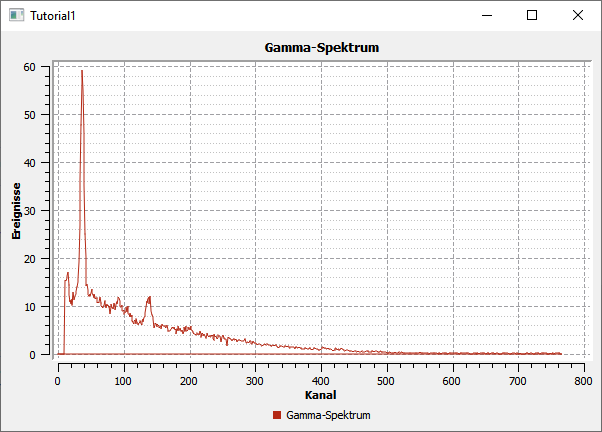
Die Achsen passen sich standardmäßig automatisch an den Wertebereich der angezeigten Kurven an. Das kann man natürlich auch ändern, siehe Kapitel 11.
2.2.6. Logarithmische Achsen
Das QwtPlot kann auch logarithmische Achsen verwenden. Dazu muss man eine anderen Skalenberechnungsklasse einbinden, die QwtLogScaleEngine (Header QwtLogScaleEngine bzw. qwt_scale_engine.h):
// Logarithmische Y-Achse
QwtLogScaleEngine * logScale = new QwtLogScaleEngine();
plot.setAxisScaleEngine(QwtPlot::yLeft, logScale); // plot takes ownership
// manuelle Achsenlimits festlegen, da autoscale bei log-Achsen nicht sinnvoll funktioniert
plot.setAxisScale(QwtPlot::yLeft, 1e-3,1000);Beim Aufruf von setAxisScaleEngine() nimmt das Plot wiederum das Objekt in Besitz und kümmert sich dann um das Speicheraufräumen.
Kapitel 11 beschreibt die Details der ScaleEngine und gibt weitere Beispiele.
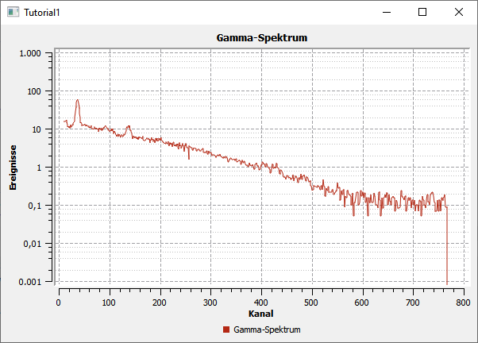
2.2.7. Markierungslinien
Ein weiteres Zeichenelement, das man hin und wieder braucht, sind horizontale oder vertikale Markierungslinien. Beispielhaft fügen wir eine solche Linie mal dem Plot hinzu (Header QwtPlotMarker bzw. qwt_plot_marker.h):
QwtPlotMarker * marker = new QwtPlotMarker;
marker->setLabelOrientation(Qt::Vertical); // Vertikale Linie
marker->setLabelAlignment(Qt::AlignRight | Qt::AlignBottom); // Label unten und rechts von der Linie
marker->setValue(36, 0); // bei vertikalen Linien muss die x-Koordinate festgelegt werden
QPen markerPen(QColor(40,60,255));
markerPen.setStyle(Qt::SolidLine);
marker->setLinePen(markerPen);
marker->setLineStyle(QwtPlotMarker::VLine);
QwtText markerLabel("207,50 keV");
QFont markerFont;
markerFont.setPointSize(8);
markerLabel.setFont(markerFont);
marker->setLabel(markerLabel);
marker->attach(&plot); // plot takes ownershipAuch bei den Markern gibt es vielfältige Einstellungsmöglichkeiten, siehe Kapitel 10.

Nun ist das Diagramm selbst fertig und wir widmen uns der Nutzerinteraktion.
2.3. Interaktion mit dem Diagramm
Das QwtPlot bietet die üblichen Interaktionsmöglichkeiten für den Anwender, wie z.B. Herein- und Herauszoonmen, oder Verschieben des Plotausschnitts.
2.3.1. Zoomfunktionalität mit QwtPlotZoomer
Die Zoom-Funktionalität wird über die Klasse QwtPlotZoomer hinzugefügt (Header QwtPlotZoomer bzw. qwt_plot_zoomer.h):
// Zoomer hinzufügen
// Achtung: NICHT QwtPlot selbst als 3 Argument übergeben, sonder das canvas()
QwtPlotZoomer * zoomer = new QwtPlotZoomer(QwtPlot::xBottom, QwtPlot::yLeft, plot.canvas()); // plot takes ownership
zoomer->setTrackerMode( QwtPlotPicker::AlwaysOn ); // Kurvenvwerte unterm Cursor anzeigenWenn man mit der Maus über das Diagramm fährt, sieht man bereits einen veränderten Cursor und dank des Aufrufs setTrackerMode(QwtPlotPicker::AlwaysOn) sieht man nun auch die x- und y-Werte (des Achsen xBottom und yLeft) unter dem Cursor.
Hineinzoomen kann man, indem man die Linke Maustaste gedrückt hält, und ein Zoom-Rechteck aufzieht. Das kann man auch mehrmals hintereinander machen. Das QwtPlot merkt sich intern diese Zoomstufen. Herauszoomen kann durch Klick auf die rechte Maustaste, wobei immer eine Zoomstufe hinausgezoomt wird.
|
Die äußerste Zoomstufe wird im Konstruktor der |
Im Quelltext gibt es noch eine Besonderheit. Während die bisherigen Plotelemente immer mit Memberfunktionen der QwtPlot-Klasse hinzugefügt wurde, bzw. mittels attach(), wird das Zoomerobjekt analog zu Qt Klassen als Kindobjekt der Zeichenfläche gegeben und registriert sich darüber als interaktives Element bei Plot.
|
Es ist wichtig darauf zu achten, dass man beim Konstruktor der Klasse Im Konstruktor der |
Damit der Zoomer weiß, welche Achsen beim Zoom manipuliert werden sollen, muss man die x- und y-Achse im Konstruktor angeben. Möchte man z.B. beide y-Achsen gleichzeitig zoomen, braucht man zwei QwtPlotZoomer-Objekte.

2.3.2. Plotausschnitt verschieben mit QwtPlotPanner
Wenn man Ausschnitt eines hineingezoomten Plots interaktiv verschieben möchte, kann man den QwtPlotPanner hinzufügen (Header QwtPlotZoomer bzw. qwt_plot_zoomer.h):
// Panner hinzufügen, wie auch beim PlotZoomer muss das Canvas-Objekt als Argument übergeben werden
QwtPlotPanner * panner = new QwtPlotPanner(plot.canvas()); // plot takes ownership
panner->setMouseButton(Qt::MiddleButton); // Mittlere Maustaste verschiebtWie beim QwtPlotZoomer wird das Objekt als Kindobjekt des Canvas-Widgets hinzugefügt. Üblich ist das Verschieben von Bildschirminhalten mit gedrückter mittlerer Maustaste, also legt man das mit setMouseButton() fest.
Damit ist das Einstiegstutorial beendet. Mit dem QwtPlot kann man bereits mit wenigen Handgriffen ein voll funktionsfähiges und interaktives Diagramm erstellen.
In diesem Tutorial war das QwtPlot gleichzeitig das Anwendungs-Widget. Wenn man das QwtPlot aber in bestehende Designer-Formularklassen einfügen will, gibt es verschiedene Techniken:
-
die Verwendung von Platzhalter-Widgets
-
die Einbindung von Qt Designer Plugins für die Qwt Bibliothek
Diese Methoden sind in Kapitel 17.5 beschrieben.
Allen Diagrammtypen und weiteren Plot-Eigenschaften sind einzelne Kapitel gewidmet. Beim QwtPlot wird dabei zunächst nur auf die mitgelieferte Funktionalität des QwtPlot und der dazugehörigen Klassen eingegangen. In späteren Kapiteln wird die Erweiterung der Plot-Funktionalität durch Überschreiben/Ersetzen der eingebauten Funktionen gezeigt.
3. QWT Widgets und Eingabekomponenten
Neben dem QwtPlot gibt es in der Qwt-Bibliothek noch eine Reihe anderer Eingabekomponenten, die in diesem Kapitel kurz vorgestellt werden.
Viele dieser Komponenten sind klassischen Anzeigen und Einstellrädern in wissenschafltlich/technischen Geräten nachempfunden.
Für die Anzeige der Skalen verwenden die nachfolgend vorgestellten Komponenten intern zur Darstellung der Skalen die in Kapitel 11.2 näher beschriebenen Skalenberechnungs- und -zeichenklassen.
3.1. Schieberegler (Slider)
Die Klasse QwtSlider erlaubt die Darstellung verschiedener Schieberegler, welche mit der Maus oder Tastatur (Cursortasten) bedient werden können. Im Gegensatz zur QSlider Klasse können die Skalen viel flexibler und auch nichtlinear definiert werden.

QwtSliderDas Beispiel im Screenshot oben ist in der Qwt-Bibliothek als Beispiel controls enthalten.
3.2. Drehräder/Einstellräder und
Die Klasse QwtWheel zeigt ein horizontales oder vertikales Einstellrad. Die Klasse QwtThermo zeigt eine Balkenanzeige, allerdings mit einer flexibel hinterlegbaren Farbtabelle. Dies erlaubt z.B. Farbverläufe oder Farbsprünge bei Übersteigen bestimmter Schwellwerte.
Qt selbst bietet für eine Balkenanzeige die Klasse QProgressBar an, welches sich aber im Erscheinungsbild an den jeweiligen Plattformstil für Fortschrittsbalken orientiert und auch keine Skalen bietet.

QwtWheel und QwtThermoDas Beispiel im Screenshot oben ist in der Qwt-Bibliothek als Beispiel controls enthalten.
3.3. Drehknöpfe
Die Klasse QwtKnob zeigt einen Drehknopf, mit ebenso flexibel konfigurierbaren Skaleneinheiten. Die Qt-Klasse QDial bietet ebenso ein Einstellrad, jedoch wiederum viel simpler und mit weniger Einstellungsmöglichkeiten hinsichtlich der Skalendarstellung und -skalierung.

QwtKnobDas Beispiel im Screenshot oben ist in der Qwt-Bibliothek als Beispiel controls enthalten.
3.4. Analoge Zeiger-Anzeigen
Die Klasse QwtDial zeichnet analoge Zeigeranzeigen, die aber auch mit der Maus/Tastatur verändert werden können (wenn man das aktiviert). Die Anzeigen lassen sich farblich sehr individuell konfigurieren.

QwtDialDas Beispiel im Screenshot oben ist in der Qwt-Bibliothek als Beispiel controls enthalten.
Bemerkenswert ist vielleicht noch, dass die Anzeigenadel selbst unabhängig von der Klasse QwtDial durch eine separate Klasse implementiert wird. Als Standard wird hier QwtDialSimpleNeedle verwendet, wie im Screenshot oben. Man kann sich hier aber auch austoben, und selber beliebige Anzeigenadeln entwerfen und integrieren.
4. Allgemeine Grundlagen des QwtPlot
Das QwtPlot ist sicher die nützlichste und am weitesten bekannte Komponente der Qwt Bibliothek. Im Gegensatz zu vielen anderen Qt-Diagrammkomponenten, kann man mit dem QwtPlot wirklich sehr flexibel (und effizient) alle möglichen Diagrammtypen erstellen und anzeigen.
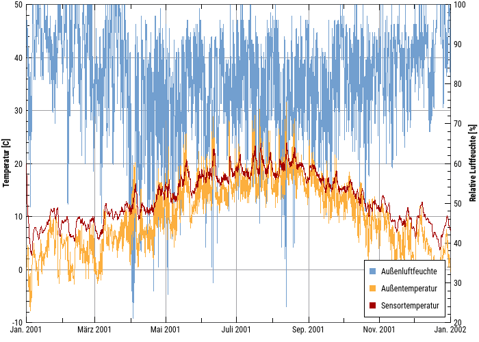
QwtPlot mit zwei y-Achsen und innenliegender Legende.Bevor ab Kapitel 5 die einzelnen Diagrammtypen vorgestellt werden, geht es in diesem Kapitel um die wesentlichen Grundlagen.
4.1. Aufbau und Elemente der Diagrammkomponente
Das QwtPlot besteht aus einem Titel, umliegenden Achsen, Legenden und der eigentlichen Zeichenfläche. Alle diese Elemente können konfiguriert und sichtbar/unsichtbar geschaltet werden.
4.1.1. Achsen und Koordinatensystem
Das Diagramm selbst ist ein kartesisches Diagramm mit maximal 4 Achsen, identifiziert über folgende Enumerationswerte:
-
QwtPlot::xBottom -
QwtPlot::xTop -
QwtPlot::yLeft -
QwtPlot::yRight
Diese Achsen haben primär die Aufgabe, zwischen den Plotkoordinaten (x,y) und Bildschirmkoordinaten umzurechnen. Jede der vier Achsen kann individuell konfiguriert werden, welches sich auf die min/max-Werte und die Achsenskalierung auswirkt.
4.1.2. Diagramm-/Zeichenelemente
Innerhalb der Zeichenfläche kann man nun die verschiedensten Elemente zeichen, bspw.:
-
Linien,
-
Balken,
-
Symbole,
-
Markierungen,
-
Legendeneinträge,
-
Gitterraster,
-
… und viele weitere
Alle diese Objekte sind von der Basisklasse QwtPlotItem abgeleitet und teilen sich dadurch gewisse gemeinsame Eigenschaften.
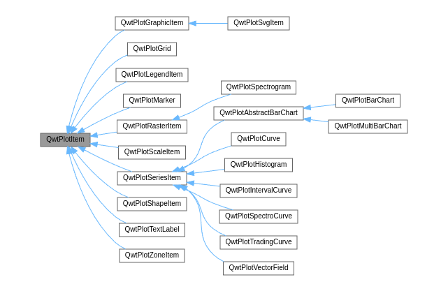
In einem Diagramm kann man alle möglichen Elemente kombinieren, also auch Liniendiagramme mit Balken, Symbolen und Markierungen darstellen.
|
Die Zeichenreihenfolge, also welches Zeichenelement ein anderes überdeckt, bestimmt das z-Attribut. Dies wird über die Funktionen |
Die Positionierung der Diagrammelemente erfolgt über die Plotkoordinaten. Die Umrechung in Bildschirmkoordinaten bzw. die konkrete Position auf der Zeichenfläche wird mittels der jeweils zugeordneten x- und y-Achse gemacht. Da es nun jeweils zwei x- und y-Achsen gibt, braucht man also bei Anzeige eines Diagrammelements an einem bestimmtenx,y-Datenpunkt zwingend eine Zuordnung zu einer x- und einer y-Achse. Diese Eigenschaft setzt man den einzelnen Zeichenelementen, wobei standardmäßig xBottom und yLeft ausgewählt sind.
|
Die Zuordnung eines Zeichenelements zu einer Achse erfolgt mit den Memberfunktionen |
Das QwtPlotItem deklariert und implementiert auch die virtuellen Funktionen für das Zeichnen sowie Berechnen wichtiger Layoutdaten. Dies wird aber später in den fortgeschrittenen Kapiteln noch genauer erklärt. Nun aber zu den individuellen Zeichenelementen und daraus erstellten Diagrammtypen.
4.1.3. Hinzufügen/Entfernen von Zeichenelementen
Alle Zeichenelemente werden grundsätzlich auf dem Heap mit new erstellt und mittels der Memberfunktion QwtPlotItem::attach(plot) dem eigentlichen QwtPlot hinzugefügt.
Entfernen kann man Zeichenelemente mittels der Funktion QwtPlotItem::detach().
|
Beim Aufruf von Möchte man das Zeichenelement dennoch wieder zurückerhalten, ruft man die Memberfunktion |
Man kann auch alle Zeichenelemente eines bestimmten Typs wieder entfernen:
// alle Kurven entfernen und die Kurvenobjekte dabei löschen
plot.detachItems(QwtPlotItem::Rtti_PlotCurve, true); // detach and deleteDas erste Argument von detachItems() ist der Zeichenelementtyp. Mit dem zweiten Argument gibt man an, ob das Objekt selbst gelöscht werden soll, oder nur aus dem Plot entfernt wird. Im letzteren Fall muss man sich wieder selbst um das Speicheraufräumen kümmern.
4.2. Datenhaltung im QwtPlot / QwtSeriesStore
Für die Darstellen von Plotkurven/Balken oder anderen Zeichenelementen werden die Daten für mehrere Datenpunkte (samples) benötigt. Je nach Anforderung des Zeichenelements gibt es verschiedene Typen von samples. So brauchen Linienkurven normalerweise x,y-Wertepaare, aber Intervallkurven jeweils x,y1,y2-Tuples.
Alle Zeichenelemente, welche solche Reihendaten verwenden, sind Kinder der Klasse QwtPlotSeriesItem.

Die Datenhaltung erfolgt in der Template-Klasse QwtSeriesStore, welche die abstrakte Schnittstellenklasse QwtAbstractSeriesStore implementiert.
|
Die hier in Qwt verwendet Kombination von Template-Klassen für die Datenhaltung individueller Typen und gleichzeitig Implementierung gemeinschaftlicher Klassenfunktionalität via virtueller Funktionen, zeigt mal wieder schön die Flexibilität von C++. Allerdings macht es das Verständnis der Interaktion von Datenhalteklassen und die Zeichenelement-Klassen auf den ersten Blick etwas komplizierter. Glücklicherweise muss man das für die Verwendung des |
Je nach Anforderung des individuellen Zeichenelements/Diagrammtyps werden unterschiedliche Daten benötigt:
-
QPointFfür reguläre Reihen-/Seriendiagramme (Linien) -
QwtIntervalSamplefür Histogramme und Intervallkurven -
QwtPoint3Dfür Spektrogramplots (Farbverlaufsdiagramme) -
QwtOHLCSamplefür Trading-Curves (OHLC - Open-High-Low-Close) -
QwtVectorFieldSamplefür Vektorfelder
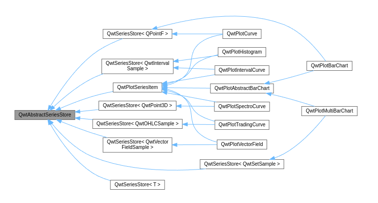
|
Die meisten Diagrammelemente/Diagrammklassen haben geeignete Schnittstellenfunktionen für die Übergabe der Plotdaten ans Diagramm. Daher muss man selten direkt mit |
4.3. Automatisches Zeichnen oder Zeichnen bei Bedarf
Das Zeichnen eines komplexen Plots kann durchaus länger dauern, daher ist es bei Anpassungen des Plots häufig nicht notwendig, bei jeweil individuellen Änderung alles neu zu zeichnen. Stattdessen reicht es aus, nach Aktualisierung aller Daten und Anpassung anderer Einstellungen (Achsen, Legenden,…) das Plot neu zu zeichnen.
Zeichnen bedeutet hier eigentlich zwei unterschiedliche Arbeitsschritte:
-
Neuberechnung des Layouts, d.h. Größen für Achsen, Legenden, Titel, Label, Zeichenfläche etc.. Dabei erfolgt auch eine Neuberechnung der Achsenskalierung und damit der Zuordnung von Plot-Koordinaten zu Pixelgrößen
-
Das eigentliche Zeichnen (render) des Plots
Schritt 1 wird ausgeführt, wenn man QwtPlot::replot() aufruft. Standardmäßig wird das immer gemacht, wenn man irgendeine Ploteigenschaft ändert. Diesen automatischen Aufruf kann man mit QwtPlot::setAutoReplot() an/ausschalten.
// Automatisches Neu-Layouten ausschalten
plot->setAutoReplot(false);|
Der Aufruf von Ein Ausschalten des autoReplot kann aber sinnvoll sein, wenn bei Anpassungen von individuellen Ploteigenschaften ein zwischenzeitlich inkonsistenter Zustand eintreten könnte, wo ein Neulayouten nur Quatsch erzeugen könnte oder sowas wie Division durch Null erzeugen könnte. Dann wartet man besser, bis alle Plot-/Kurveneigenschaften fertig aktualisiert wurden und ruft dann |
Nach einem Aktualisieren des Layouts in replot() wird ein Zeichenupdate via Qt-Event-Queue angestoßen. Gezeichnet/gerendert wird dann erst im nächsten Bildrefresh und auch nur ein Mal. Somit kann man gerne 1000 Mal replot() aufrufen, und es wird doch nur einmal gerendert. Dies spart sehr viel Zeit.
5. Kurvendiagramme
Die wohl häufiges Diagrammart werden wohl Kurvendiagramme sein. Kurvendiagramme bzw. Liniendiagramme oder Reihendiagramme sind parametrische Kurven, bei denen die einzelnen Punkte nacheinander gezeichnet werden, und im Fall von Liniendiagrammen durch Linien verbunden werden. Weder x- noch y-Werte müssen monoton steigen.
Das Zeichenelement QwtPlotCurve wird jedoch nicht nur für Liniendiagramme im klassischen Sinn benutzt, sondern auch für Stufen, Stäbchen, Punkt/Symbol-Diagramme und so weiter. Alle diese Varianten haben jedoch gemein, dass sie als Daten einen x- und einen y-Vector mit Daten in Plotkoordinaten erwarten.
Der individuelle Stil der Kurve wird mit der Funktion QwtPlotCurve::setStyle() festgelegt. Je nach Stil können/müssen weitere Parameter festgelegt werden. In den folgenden Abschnitten werden die möglichen Diagrammtypen für jeweils die gleichen x/y-Daten im Vergleich gezeigt.
5.1. Datenübergabe
Wie in Kapitel 4.2 erklärt, wird für die interne Datenhaltung in QwtPlotCurve die Klasse QwtSeriesStore<QPointF> verwendet.
Daten kann man nun auf mehrere Arten der Plot-Kurve übergeben:
QVector<double> x{1,2,5,6,10,12,15,16,17};
QVector<double> y{5,4,8,8, 4, 5, 8, 9,11};
curve->setSamples(x, y);QVector<QPointF> samples{
QPointF(1,5),
QPointF(2,4),
QPointF(5,8)
};
curve->setSamples(samples);Wenn die Daten in einem C-Array oder std::vector vorliegen, bietet sich QwtPlotCurve::setSamples() an.
std::vector<double> x{1,2,5,6,10,12,15,16,17};
std::vector<double> y{5,4,8,8, 4, 5, 8, 9,11};
const double * xdata = x.data();
const double * ydata = y.data();
unsigned int count = x.size();
curve->setSamples(xdata, ydata, count);|
Bei der Verwendung von |
Bei sehr großen Datenmengen und begrenztem Hauptspeicher kann es sinnvoll sein, die Daten nicht in das Plot hineinzukopieren, sondern die Plotkurven direkt auf den Speicher zugreifen zu lassen. Dafür gibt es die Funktion QwtPlotCurve::setRawSamples(). Die Syntax ist wie beim vorherigen Beispiel:
const double * xdata = x.data(); // x ist ein std::vector
const double * ydata = y.data(); // y ist ein std::vector
unsigned int count = x.size();
curve->setRawSamples(xdata, ydata, count);|
Die Variablen und deren Speicherbereich, welche im Aufruf von |
Direkte Änderung der Daten im Speicher wird beim nächsten Rendern des Plots direkt sichtbar. Allerdings müssen das Plot und dessen Zeichenelemente, die ein Interesse an den Wertebereichen der Plotkurven haben, manuell über eine Änderung der Daten information werden. Dazu einfach QwtPlot::replot().
5.2. Kurvenarten
5.2.1. Liniendiagramm
Konfiguration einer QwtPlotCurve als Linie:
QwtPlotCurve *curve = new QwtPlotCurve();
curve->setStyle(QwtPlotCurve::Lines);
5.2.2. Stäbchen (Sticks)
Konfiguration einer QwtPlotCurve als vertikale Stäbchen:
QwtPlotCurve *curve = new QwtPlotCurve();
curve->setStyle(QwtPlotCurve::Lines);
curve->setOrientation(Qt::Vertical);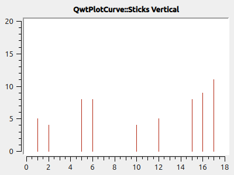
Alternativ kann man die Stäbchen auch horizontal zeichnen. Dazu muss man zusätzlich die Ausrichtung mit QwtPlotSeriesItem::setOrientation() setzen:
QwtPlotCurve *curve = new QwtPlotCurve();
curve->setStyle(QwtPlotCurve::Lines);
curve->setOrientation(Qt::Horizontal);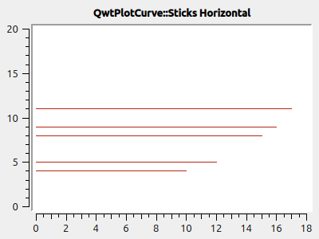
5.2.3. Stufendiagramme
Wenn die Daten nicht linear verbunden werden sollen, sondern eher Stufen darstellen, kann man den Linientyp Steps verwenden.
Das Zusatz-Attribut QwtPlotCurve::Inverted gibt dabei an, ob die Stufe am Ende des Intervals oder Anfang des Intervals sein soll. Kurvenattribute werden mit QwtPlotCurve::setCurveAttribute() gesetzt:
QwtPlotCurve *curve = new QwtPlotCurve();
curve->setStyle(QwtPlotCurve::Steps);
curve->setCurveAttribute(QwtPlotCurve::Inverted, false);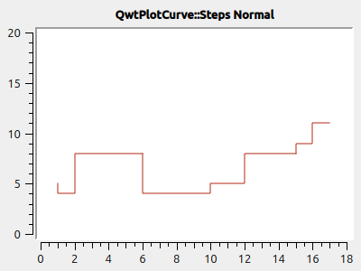
Betrachtet man die Eingangsdaten:
x y
1 5
2 4
5 8
...so fällt auf, dass im ersten Intervall, also zwischen x=1..2, der Wert y2=4 gezeichnet wird und an der Stelle x1=1 die Verbindungslinie zwischen y1=5 und y2=4 gezeichnet wird.
Will man direkt den ersten y-Wert im ersten Intervall zeichnen (das wäre eher die natürliche Erwartungshaltung), so muss man das Attribut Inverted setzen:
QwtPlotCurve *curve = new QwtPlotCurve();
curve->setStyle(QwtPlotCurve::Steps);
curve->setCurveAttribute(QwtPlotCurve::Inverted, true);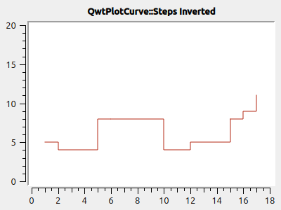
5.2.4. Punkte (Dots)
Man kann an den jeweiligen x,y-Koordinaten auch einfach nur Punkte (auch nur einzelne Pixel) zeichnen. Das geht sehr schnell vergleichen mit dem Zeichnen von Symbolen (siehe Kapitel 5.3) und kann für größere Punktwolken verwendet werden.
|
Bei der Verwendung von |
QwtPlotCurve *curve = new QwtPlotCurve();
curve->setStyle(QwtPlotCurve::Dots);
curve->setPen(QColor(180,40,20), 4); // width of 4 makes points better visible
|
Bei der Visualisierung von Punktwolken kann es hilfreich sein, Transparenz/Alphablending zu benutzen. Dazu einfach bei der Zeichenfarbe noch einen Alphawert kleiner als 255 setzen. |
QwtPlotCurve *curve = new QwtPlotCurve();
curve->setStyle(QwtPlotCurve::Dots);
curve->setPen(QColor(0,40,180,32), 2); // 2 pixels wide, alpha value 32
|
Wenn man ein Liniendiagramm mit Visualisierung von Stützstellen erhalten will, so kann man natürlich zwei Linien ins Diagramm einfügen: eine mit Stil |
5.2.5. Keine Linie
Möchte man eine Kurve ausschließlich mit Symbolen zeichnen (siehe Kapitel 5.3), so kann man das Zeichnen des Linienzugs auch komplett ausstellen:
curve->setStyle(QwtPlotCurve::NoCurve);5.3. Symbole/Punkte
An den jeweiligen x,y-Koordinaten einer Kurve kann man auch Symbole zeichnen. Dafür bietet die Qwt-Bibliothek die Klasse QwtSymbol an.
Ein Symbol fügt man zu eine Kurve wie folgt hinzu:
// Symbol hinzufügen
QwtSymbol * symbol = new QwtSymbol(QwtSymbol::Ellipse);
symbol->setSize(8);
symbol->setPen(QColor(0,0,160), 2);
symbol->setBrush(QColor(120,170,255));
curve->setSymbol(symbol); // Curve takes ownership of symbol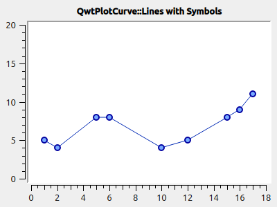
Zuerst wird das zu verwendende Symbol auf dem Heap mit new erzeugt. Der Konstruktor übernimmt den Typ des Symbols (siehe auch Galerie unten). Man kann das aber auch später über QwtSymbol::setStyle() setzen.
Wichtig ist auch die Größe des Symbols, gesetzt mittels QwtSymbol::setSize() in Pixeln. Diese Größe skaliert das Symbol je nach Form.
Außerdem wichtig sind die Eigenschaften Pen und Brush (QwtSymbol::setPen() und QwtSymbol::setBruch()). Der Pen wird für das Zeichnen des Umrisses verwendet und der Brush, so gesetzt, für das Ausfüllen der Form. Manche Symbole wie das Kreuz sind nicht ausgefüllt, daher hat hier der Brush keine Wirkung.
Schließlich wird das Symbol der Kurve mit QwtPlotCurve::setSymbol() gegeben.
|
Beim Aufruf von |
Die Symbolklasse ist ziemlich mächtig und kann verschiedenste Symbole zeichnen:
-
vorgefertigte Formen wie Kreise, Rechtecke, Kreuze, etc. (Stil
QwtSymbol::Ellipse…QwtSymbol::Hexagon -
nutzerdefinierte Bilder/Pixmaps (Stil
QwtSymbol::Pixmap) -
spezifische Grafiken gekapselt in Klasse
QwtGraphicund erzeugt durch eine Anzahl vonQwtPainterCommandAnweisungen (StilQwtSymbol::Graphic) (siehe auch [sec:qwtGraphic]) -
SVG-Dokumente (Stil
QwtSymbol::SvgDocument) -
nutzerdefinierte Formen, welche durch einen QPainterPath definiert sind (Stil
QwtSymbol::Path)
5.3.1. Symbolstile/Eingebauten Symbolformen
Es gibt zahlreiche eingebaute Symbolformen (fett gedruckt im Diagrammtitel ist jeweils der QwtSymbol::Style Enumerationsname):

Symbole müssen nicht immer quadratisch sein. Wenn man die Größe eines Symbols mit
symbol->setSize(10);setzt, wird automatisch width=height=10 verwendet. Alternativ kann man aber auch ein Rechteck als Größe definieren:
symbol->setSize(w,h);
// oder via QSize
QSize s(w,h);
symbol->setSize(s);Deshalb gibt es auch keine separaten Linienstile für Kreis und Ellipse oder Rechteck und Quadrat.
5.3.2. Nutzerdefinierte Formen via QPainterPath
Man kann beliebige eigene Symbolformen setzen, indem man die Klasse QPainterPath verwendet.
Folgendes Beispiel generiert ein Glühlampensymbol:
// Symbol hinzufügen
QwtSymbol * symbol = new QwtSymbol(QwtSymbol::Path);
QPainterPath p;
p.addEllipse(QRectF(-10,-10,20,20));
p.moveTo(-7,-7);
p.lineTo(7,7);
p.moveTo(7,-7);
p.lineTo(-7,7);
symbol->setPath(p);
symbol->setPen(QColor(0,0,120), 2);
symbol->setBrush(QColor(160,200,255));
curve->setSymbol(symbol); // Curve takes ownership of symbol
|
Wenn man eine nicht-rechteckige Geometrie mit QPainterPath definiert, sollte man beim Ändern der Größe mittels |
5.3.3. SVG-Symbole
Man kann eigene SVG-Dateien rendern und anzeigen lassen. Dafür muss man nur eine SVG-Datei einlesen/definieren und als Symbol setzen:
QwtSymbol * symbol = new QwtSymbol(QwtSymbol::SvgDocument);
QFile f("symbol.svg");
f.open(QFile::ReadOnly);
QTextStream strm(&f);
QByteArray svgDoc = strm.readAll().toLatin1();
symbol->setSvgDocument(svgDoc);
curve->setSymbol(symbol); // Curve takes ownership of symbol|
Auch hier ist beim Festlegen der Größe wieder auf das Seitenverhältnis zu achten und zumeist die Variante |
Manchmal liegt der Ankerpunkt des SVG-Bildes nicht im Zentrum, wie in obigem Beispiel:
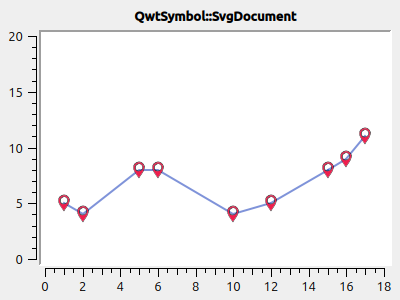
Man kann den Ankerpunkt bzw. den Zentrierpunkt des Symbols aber mit QwtSymbol::setPinPoint() ändern. Die Koordinaten des PinPoint werden dabei von links/oben des SVG-Bildes gemessen:
...
QRect br = symbol->boundingRect(); // size of symbol
symbol->setPinPoint(QPointF(br.width()/2-1,br.height()-3));
|
Man kann die manuell gesetzten Ankerpunkt auch wieder mit |
5.3.4. Bild-Symbole (Pixmaps)
Alternativ zu eigenen Vektorgrafiksymbolen kann man auch beliebige Bilder als Symbole verwenden. Dies geschieht analog zu den SVG-Symbolen:
QwtSymbol * symbol = new QwtSymbol(QwtSymbol::Pixmap);
QwtText t("QwtSymbol::Pixmap");
QPixmap pixmap;
pixmap.load("symbol.png");
symbol->setPixmap(pixmap);
QRect br = symbol->boundingRect(); // size of symbol
symbol->setPinPoint(QPointF(br.width()/2,br.height()-1));
curve->setSymbol(symbol); // Curve takes ownership of symbol
5.4. Ausgefüllte Kurven
Eine Kurve kann neben dem Zeichenstift auch noch einen Brush übernehmen. Dann wird die Kurve bis zur x-Achse gefüllt:
curve->setBrush(QColor(0xa0d0ff));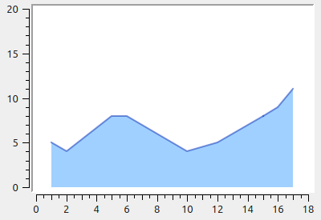
Man kann die Bezugslinie für die Füllung auch noch verschieben:
curve->setBaseLine(8);
5.5. Legendeneinträge
Jede QwtPlotCurve erstellt ihr eigenes Icon zur Anzeige in der Legende. Der in der Legende angezeigte Text wird mit QwtPlotItem::setTitle() gesetzt. Um die Legende anzuzeigen, muss man wie in Kapitel 9 beschrieben zunächst eine Legende erstellen und ins Plot einfügen.
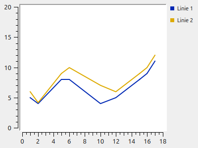
Zusätzlich kann noch mit QwtPlotCurve::setLegendAttribute() festgelegt werden, ob ein ausgefülltes Rechteck, eine Line oder das Reihensymbol in der Legende gezeichnet wird.
Diese Eigenschaften werden für jede QwtPlotCurve individuell gesetzt:
curve->setTitle("Linie 1");
curve->setLegendAttribute(QwtPlotCurve::LegendShowLine, true);
Bei Linien mit Markierungen kann man auch die Markierungen zeichnen:
curve->setTitle("Linie 1");
curve->setLegendAttribute(QwtPlotCurve::LegendShowLine, true);
curve->setLegendAttribute(QwtPlotCurve::LegendShowSymbol, true);
QwtSymbol * symbol = new QwtSymbol(QwtSymbol::Rect);
symbol->setSize(6);
symbol->setPen(QColor(0,0,160), 1);
symbol->setBrush(QColor(160,200,255));
curve->setSymbol(symbol); // Curve takes ownership of symbol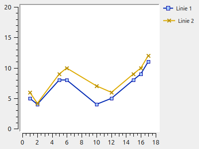
|
Wenn man unterschiedliche Liniensymbole verwendet, dann wirkt sich das auf die automatisch bestimmte Legendenicongröße aus. Somit sind dann die Legendentitel manchmal wie im Screenshot oben nicht perfekt ausgerichtet. Man kann aber die Größe der Legendenicons mit |
curve->setTitle("Linie 1");
curve->setLegendAttribute(QwtPlotCurve::LegendShowLine, true);
curve->setLegendAttribute(QwtPlotCurve::LegendShowSymbol, true);
QwtSymbol * symbol = new QwtSymbol(QwtSymbol::Rect);
symbol->setSize(6);
symbol->setPen(QColor(0,0,160), 1);
symbol->setBrush(QColor(160,200,255));
curve->setSymbol(symbol); // Curve takes ownership of symbol
// einheitliche Legendenicon-Breite unabhängig vom gewählten Symbol
curve->setLegendIconSize(QSize(30,16));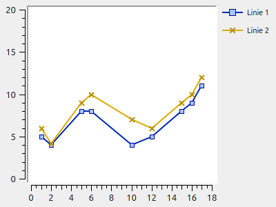
|
Da die Legendenicons beim Setzen von Kurvensymbolen konfiguriert werden, muss die Änderung der Legendenicongrößen stets nach dem Setzen/Anpassen von Kurvensymbolen gemacht werden. Also der Aufruf von |
|
Alle Informationen zu Legenden und auch spezifische Anpassungen, z.B. wie man eigene Icons zeichnet, gibt es in Kapitel 9. |
5.6. Zeichenattribute, Zeichengeschwindigkeit und Performanceoptimierung bei großen Datenreihen
Das Zeichnen großer Datenreihen kann mitunter einige Zeit beanspruchen. Vor allem beim Größenändern des Plotfensters wirkt sich das dann durch merkliche Verzögerung beim Bildschirmaufbau aus. Je größer die Datenreihen sind, d.h. umsomehr Punkte enthalten sind, umso länger dauert im Allgemeinen das Zeichnen des Plots. In diesem Abschnitt soll es um verschiedene Eigenschaften und Fähigkeiten der QwtPlotCurve gehen, die sich direkt auf die Zeichengeschwindigkeit auswirken.
5.6.1. Zeichenattribute (PaintAttribute / PaintAttributes)
Die Klasse QwtPlotCurve hat verschiedene Zeichenattribute, die verwendete Algorithmen näher konfigurieren. Hier ist zunächst eine kurze Liste, wobei die individuellen Attribute und deren Auswirkung später näher beschrieben werden:
-
ClipPolygons- damit werden zu zeichnende Datenreihen ausgedünnt, sodass nur im aktuellen Zoomfenster sichtbare Kurventeile gezeichnet werden. Ist standardmäßig aktiv und ist für den SVG-Export notwendig. Sonst ist dieses Herausfiltern außerhalb liegender Punkte vor allem beim Hineinzoomen wirkungsvoll. -
FilterPoints- damit werden Punkte/Liniensegmente aus den Datenreihen herausgefiltert, die sowieso nicht gezeichnet werden würden, weil sie übereinander liegen. -
FilterPointsAggressive- Nur für LinientypQwtPlotCurve::Linien: Ersetzt viele kurze übereinanderliegende Polygonstücke durch einzelne Liniensegmente -
MinimizeMemory- Nur beim LinientypQwtPlotCurve::Dots: Verhindert wenn eingeschaltet, dass bei der Transformation der Datenreihe von Plotkoordinaten zu Renderkoordinaten eine eventuell große Polygon-Kopie erstellt wird. Stattdessen werden alle Punktkoordinaten einzeln transformiert, geclippt und gezeichnet. Da hierbei für jeden Punkt ein gewisser Extraaufwand benötigt wird, ist dies in der Regel etwas langsamer. -
ImageBuffer- Nur beim LinientypQwtPlotCurve::Dots: Eine sehr spezielle Optimierung, wobei die Punkte (jeweils nur ein Pixel pro Punkt) erst in einQImagegezeichnet werden. Dies erfolgt parallelisiert und kann daher sehr schnell sein, ist allerdings nur effektiv bei sehr großen Punktmengen.
|
Das Zeichenattribut |
5.6.2. Punktfilter
Durch Verwendung des Datenfiltes FilterPoints kann man bei sehr großen Reihendaten nur die Daten wirklich zeichnen, die sich auf das Diagramm auswirken. Wenn bspw. 100 Datenpunkte auf dem gleichen Pixel landen, braucht man die nicht alle zeichnen. Das Ausfiltern nicht sichtbarer Punkte und Liniensegmente hängt natürlich von der Zoomstufe ab und ist deshalb in die Zeichenroutine der QwtPlotCurve integriert.
|
Neben dem Filtern überflüssiger Punkte durch Setzen des Zeichenattributs |
Das Zeichenattribut QwtPlotCurve::FilterPoints ist standardmäßig gesetzt und führt dazu, dass beim Transformieren der Datenreihenkoordinaten in Bildschirmkoordinaten bereits doppelte Punkte herausgefiltert werden (dies macht die Klasse QwtPointMapper). Enthält eine Datenreihe bspw. 100000 gleichverteilte Punkte entlang der x-Achse und wird auf einem 1000 Pixel breiten Plot gezeichnet, so teilen sich jeweils 100 Punkte eine x-Pixelkoordinate. Wenn nach der Umrechnung der Koordinaten zwei aufeinanderfolgende Punkte identische Pixelkoordinaten haben, werden die doppelten Punkte entfernt. Diese standardmäßig eingeschaltete Funktion macht bereits einen großen Unterschied bei der Zeichengeschwindigkeit.
Um das mal zu verdeutlichen, ist hier ein kleines Testprogramm für die Filterfunktionen:
#include <QApplication>
#include <QElapsedTimer>
#include <QDebug>
#include <cmath>
#include <qwt_plot.h>
#include <qwt_plot_curve.h>
#include <qwt_weeding_curve_fitter.h>
// Spezialisierte QwtPlotCurve mit Zeitmessung um drawCurve()
class BenchmarkedPlotCurve : public QwtPlotCurve {
protected:
void drawCurve(QPainter *p, int style,
const QwtScaleMap & xMap, const QwtScaleMap & yMap,
const QRectF & canvasRect, int from, int to) const override
{
QElapsedTimer timer;
timer.start();
QwtPlotCurve::drawCurve(p, style, xMap, yMap, canvasRect, from, to);
qDebug() << "QwtPlotCurve::drawCurve(): " << timer.elapsed() << "ms";
}
};
int main(int argc, char *argv[]) {
QApplication a(argc, argv);
QwtPlot plot;
plot.setContentsMargins(8,8,8,8);
plot.setCanvasBackground( Qt::white );
// Daten zum Darstellen generieren
QVector<double> x, y;
for (unsigned int i=0; i<10000000; ++i) {
x.append(i);
y.append(std::sin(i*0.00001));
}
QwtPlotCurve *curve = new BenchmarkedPlotCurve();
curve->setPen(QColor(180,40,20), 1);
curve->setRenderHint( QwtPlotItem::RenderAntialiased, true); // Antialiasing verwenden
curve->setPaintAttribute(QwtPlotCurve::FilterPoints, false); // Punktefilter ausschalten
curve->setSamples(x, y);
curve->attach(&plot); // Plot takes ownership
plot.resize(1000,800);
plot.show();
return a.exec();
}Das Testprogramm generiert 10 Millionen Datenpunkte (mehrere Sinuswellen) und zeichet diese dann in ein 1000x800 Pixel großes Diagramm, zunächst ohne Punktefilter. Dazu wird in Zeile
curve->setPaintAttribute(QwtPlotCurve::FilterPoints, false);das Zeichenattribut FilterPoints ausgeschaltet. Die Zeichenzeit für die Kurve einschließlich der Zeit für die Datenfilterung wird in der abgeleiteten QwtPlotCurve und dem kleinen Wrapper um die zentrale drawCurve()-Funktion gemessen.
Auf meinem Rechner gibt das Programm im Release-Build ca. 650 ms aus. Dabei werden wirklich alle 10 Millionen Punkte in den zu zeichnenden Polygonzug übernommen und auf dem Painter gezeichnet (der natürlich Liniensegmente mit Länge 0 verwirft, aber dafür etwas Zeit braucht).
Schaltet man nun das Attribut FilterPoints wieder ein, so enthält das Polygon nach dem Filtern nur noch ca. 24500 Punkte und das Zeichnen dauert ca. 300 ms.
|
Mit dem Zeichenattribut |
5.6.3. Aggressives Punktefiltern
Wenn Datenreihen sehr stark rauschen und gleichzeitig sehr große Datenmengen enthalten, dann können sich mehrere Liniensegmente überlagern. Zum Beispiel werden dann mehrere Linien mit der gleichen x-Bildschirmkoordinate übereinander gezeichnet, obwohl ja eine Linie gezeichnet zwischen minimaler und maximaler y-Koordinate ausreichen würde.
Das Zeichenattribut FilterPointsAggressive schaltet eine Vorberechnung ein, die genau diese Art der Optimierung durchführt (ebenfalls in Klasse QwtPointMapper implementiert) und aus mehreren sich überlagernden, vertikalen Liniensegmenten nur eine einzige Linie macht (deswegen ist diese Optimierung auch nur für den Linientyp QwtPlotCurve::Lines sinnvoll).
Um das mal zu testen, wandeln wir das Programm oben ab und generieren eine stark rauschende Kurve:
QVector<double> x, y;
for (unsigned int i=0; i<1000000; ++i) {
x.append(i);
y.append(QRandomGenerator64::global()->generateDouble());
}Ohne FilterPointsAggressive dauert das Zeichnen ca. 1500 ms. Obwohl die Datenreihe "nur" aus 1 Mio Punkten besteht, sind die Liniensegmente deutlich länger als bei der Sinuswelle und es dauert länger, diese zu zeichnen. Das Zeichenattribut FilterPoints kann auch wegen der stark schwankenden y-Werte kaum Punkte rausschmeißen (die Liniensegmente haben fast nie eine Länge von 0).
Wenn man nun das Attribut mit
curve->setPaintAttribute(QwtPlotCurve::FilterPointsAggressive, true);einschaltet, verkürzt sich die Zeichenzeit auf ca. 32 ms !!!! Nach dem Filtern hat das zu zeichnende Polygon nur noch ca. 3670 Punkte.
|
Die Verwendung des Zeichenattributs |
Wenn man sich die Diagramme mit und ohne FilterPointsAggressive im Vergleich anschaut, so sieht man kleinere Unterschiede.
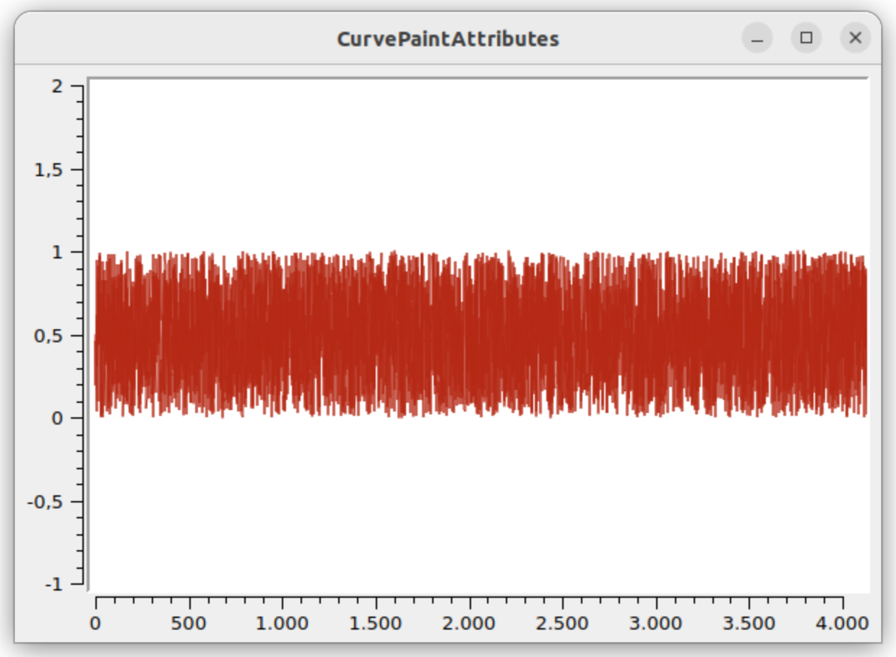
FilterPoints, Antialiasing eingeschaltet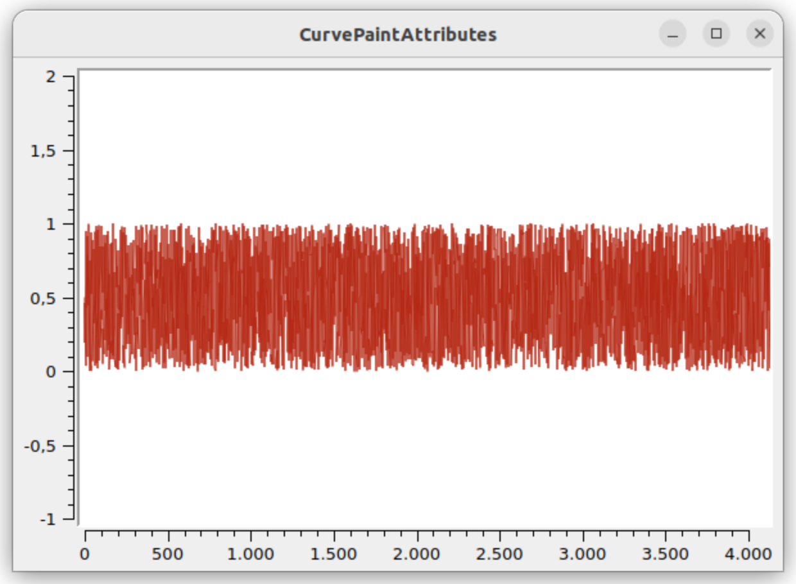
FilterPointsAggressive, Antialiasing eingeschaltetMit Antialiasing sieht man Unterschiede in den teiltransparenten Segmenten. Ohne Antialiasing muss man schon sehr genau hinsehen, um die kleinen Unterschiede zu sehen.
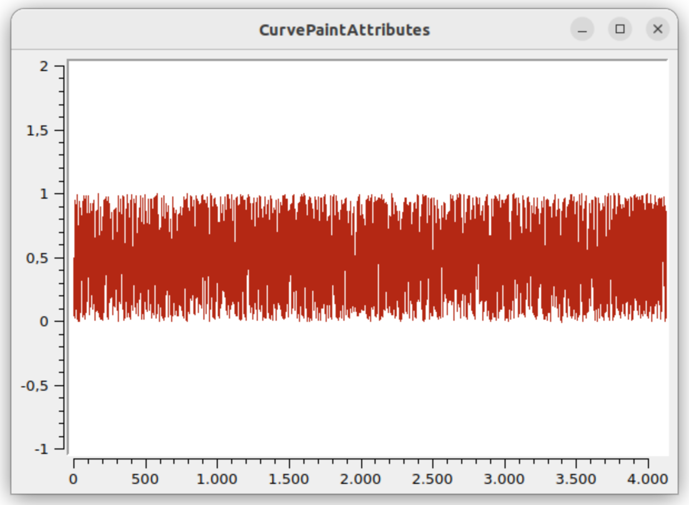
FilterPoints, Antialiasing ausgeschaltet
FilterPointsAggressive, Antialiasing ausgeschaltet(Zum Vergleich beide Bilder herunterladen und im Bildbetrachter abwechselnd anzeigen, dann sieht man die kleinen Unterschiede.)
|
Im Gegensatz zu Nach der Skalierung von Plotkoordinaten zu Bildschirmkoordinaten liegt beispielsweise folgendes Polygon zum Filtern vor: x y ---------- 6 230 6 379 6 602 7 304 7 602 7 81 7 155 8 424 ... so enthält das Polygon nach dem Filtern nur noch die Punkte: x y ---------- 6 230 6 602 7 304 7 602 7 81 8 424 ... Die Liniensegmente auf den x-Zeichenkoordinaten 6 und 7 wurden hier zusammengefasst. Aber während vorher eine Linie von (7,155) → (8,424) gezeichnet wurde, wird nun eine Linie von (7,81) → (8,424) gezeichnet, welches im Detail ein minimal anderes Erscheinungsbild gibt. Die Unterschiede in der Ausgabe sind aber so klein, dass man für die relevanten Anwendungsfälle, also größere Datenreihen und stark schwankende Werte, das Einschalten des Zeichenattributs |
5.6.4. Polygon-Clipping
Je nach Wahl des Plotausschnitts, festzulegen über Achsenskalierung (siehe Kapitel 11) oder interaktiv durch den Plotzoomer (siehe Kapitel 13), werden mitunter nur Teile von Kurven gezeichnet. In diesem Fall ist es sinnvoll, das Polygon nur auf die sichtbaren Bereiche zu begrenzen. Diese Funktionalität bietet die Klasse QwtPlotCurve durch Einschalten des Zeichenattributs QwtPlotCurve::ClipPolygons.
|
Beim Zeichnen des Plots auf dem Bildschirm könnte man das Polygon-Clipping auch weglassen, da der Qt-Painter selbst ein Clipping durchführt. Beim Datenexport in eine SVG-Datei (siehe Kapitel 15) ist das Clipping aber zwingend notwendig. |
Standardmäßig ist das Attribut QwtPlotCurve::ClipPolygons eingeschaltet. Das Clipping wird übrigends erst nach dem Punktfilteralgorithmus angewendet, sodass eine Datenreduktion in diesem Schritt sich positiv auf die Zeit für das Clipping auswirkt.
Interessanterweise wirkt sich das Polygon-Clipping beim Rendern auf den Bildschirm nur unmerklich auf die Renderperformance aus.
Beim 10 Mio Sinuskurvenplot oben (Antialiasing an, FilterPoints an, FilterPointsAggressive aus, ClipPolygons an) ist die Zeichenzeit für das komplette Diagramm ca. 300 ms. Hineingezoomt mit
plot.setAxisScale(QwtPlot::xBottom, 150000, 160000);
plot.setAxisScale(QwtPlot::yLeft, 0.99, 1);erhöht sich die Renderzeit auf ca. 370 ms. Wenn man nun ClipPolygons ausschaltet, so dauert das 290 ms beim vollständigen Plot und 410 ms beim hineingezoomten Plot.
|
Im hineingezoomten Zustand dauert der Clipping-Algorithmus länger, dafür ist das Zeichnen etwas schneller. Beide Effekte arbeiten gegeneinander aber im Ergebnis ist es bei meinem Testfall minimal langsamer als im herausgezoomten Zustand). |
Der Unterschied zwischen 300 ms und 290 ms beim vollständigen Plot liegt an dem Oberhead für die Polygon-Clipping-Funktion, die natürlich beim vollständig sichtparen Plot keine Wirkung hat.
Im stark hineingezoomten Zustand zeichnet das Plot mit eingeschaltetem Polygon-Clipping immerhin ca. 40 ms schneller, was aber selten signifikant sein sollte.
|
Dein Einfluss des Attributs Lediglich beim Ausschalten des Fazit: |
5.7. Kurvenfilter/Kurvenanpasser
Die QwtPlotCurve kann die übergebenen Rohdaten vor dem eigentlichen Rendern noch an einen Algorithmus übergeben, der die Daten glättet oder eine kontinuierliche Kuve durch die Datenpunkte legt. Diese Operationen hängen vom aktuellen Zoomlevel und der Plotgröße ab, denn je nach Auflösung wird der Verlauf der angepassten Kurve neu berechnet. Dies gibt eine bessere Qualität als beim Vorberechnen der Daten und Plotten eines Linienzugs durch vorberechnete Kurven. Deshalb ist diese Funktionalität direkt in das QwtPlot integriert.
Einen solchen Anpass-/Filteralgorithmus übergibt man der Kurve, indem man eine Klasse, abgeleitet von QwtCurveFitter der Kurve übergibt.
Es werden verschiedene Implementierungen dieser Schnittstelle mitgeliefert:
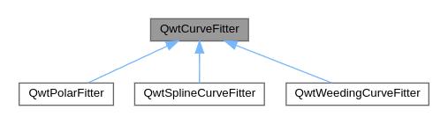
QwtCurveFitter5.7.1. Kurvenglättung/Spline-Interpolation
Schauen wir uns zuerst den QwtSplineCurveFitter an. Diese Klasse kapselt einen Algorithmus, der aus den gegebenen Stützstellen der Kurve einen weichen Verlauf berechnet. Dafür gibt es verschiedene mathematischen Algorithmen.
Jeder dieser Algorithmen ist in einer von QwtSpline abgeleiteten Klasse implementiert.

QwtSplineDas Ergebnis lässt sich am Besten mit einem einfachen parametrischen Datensatz veranschaulichen:
QVector<double> x{1,2,5,6,10,12,15,16,8};
QVector<double> y{5,4,8,8, 4, 5, 8, 9,10};
// Kurve hinzufügen
curve = new QwtPlotCurve();
curve->setStyle(QwtPlotCurve::Lines);
curve->setPen(QColor(0,220,20), 2);
curve->setRenderHint( QwtPlotItem::RenderAntialiased, true ); // Antialiasing verwenden
curve->setSamples(x, y);
// SplineFitter-Objekt erstellen
QwtSplineCurveFitter * splineFitter = new QwtSplineCurveFitter;
// Spline-Implementierung auswählen, hier QwtSplinePleasing
QwtSplinePleasing * spline = new QwtSplinePleasing();
// Splinealgorithmus setzen
splineFitter->setSpline(spline); // takes ownership
// SplineFitter-Objekt der Kurve geben
curve->setCurveFitter(splineFitter); // takes ownership
// fitting einschalten
curve->setCurveAttribute(QwtPlotCurve::Fitted, true);
curve->attach(&plot); // takes ownershipWichtig ist, dass die Verwendung des Kurvenanpassers/Filters explizit mit
curve->setCurveAttribute(QwtPlotCurve::Fitted, true);eingeschaltet wird.

Die Qwt-Bibliothek bringt eine ganze Reihe verschiedener Algorithmen und passender Implementierungen mit:
-
QwtSplinePleasing: "QwtSplinePleasing is some sort of cardinal spline, with non C1 continuous extra rules for narrow angles. It has a locality of 2. The algorithm is the one offered by a popular office package." -
QwtSplineLocal: "QwtSplineLocal offers several standard algorithms for interpolating a curve with polynomials having C1 continuity at the control points. All algorithms are local in a sense, that changing one control point only few polynomials."-
Cardinal: "The cardinal spline interpolation is a very cheap calculation with a locality of 1" -
ParabolicBlending: "Parabolic blending is a cheap calculation with a locality of 1. Sometimes is also called Cubic Bessel interpolation." -
Akima: "The algorithm of H.Akima is a calculation with a locality of 2." -
PChip: "Piecewise Cubic Hermite Interpolating Polynomial (PCHIP) is an algorithm that is popular because of being offered by MATLAB. It preserves the shape of the data and respects monotonicity. It has a locality of 1."
-
-
QwtSplineCubic: "A cubic spline is a spline with C2 continuity at all control points. It is a non local spline, what means that all polynomials are changing when one control point has changed."
|
Nur |
Zum Vergleich sind die verschiedenen Spline-Algorithmen dargestellt:


|
Obwohl die verschiedenen Spline-Implementierungen primär für das QwtPlot gedacht sind, spricht nichts dagegen, diese für allgemeine Splineinterpolationsaufgaben einzusetzen. Was die Spline-Klassen in der Qwt-Bibliothek können, ist im Detail im Kapitel 16.2 beschrieben. |
5.7.2. PolarCurveFitter
Dieser Kurvenfilter ist für Kreisdiagramme gedacht, siehe [sec:polarPlots].
5.7.3. Datenreduktionsfilter
Wie ja schon in Kapitel 5.6 beschrieben, bringt die Klasse QwtPlotCurve bereits eine Reihe eigener Funktionen mit, um unnötige Punkte und Liniensegmente hinauszufiltern. Diese sind aber primär für Rasterausgaben sinnvoll, also auf dem Bildschirm.
Bei der Ausgabe in Vektorformate (PDF/SVG) werden die Zeichenattributsfilter QwtPlotCurve::FilterPoints oder QwtPlotCurve::FilterPointsAggressive nicht verwendet, da sie nur bei gerundeten Koordinaten funktionieren.
|
Die Datenreduktionsmethoden durch Setzen der Zeichenattribute |
Man kann aber zur Datenreduktion bei Vektorexporten einen alternativen Punktfilteralgorithmus verwenden, um nicht notwendige Punkte zu entfernen. Ein solcher Datenreduktionsfilter ist in der Klasse QwtWeedingCurveFitter implementiert. Dieser ist wirklich ein Filter und entfernt Datenpunkte nach gewissen Regeln.
Konkret versucht der Algorithmus alle Punkte zu entfernen, die bereits bei linearer Interpolation zwischen den benachbarten Punkten hinreichend gut approximiert werden.
Testweise wird wieder eine Sinuswelle generiert:
QVector<double> x, y;
for (unsigned int i=0; i<10000000; ++i) {
x.append(i);
y.append(std::sin(i*0.000001)*330);
}Das Beispiel aus Kapitel 5.6 wird nun um den QwtWeedingCurveFitter erweitert:
QwtWeedingCurveFitter * weedingFitter = new QwtWeedingCurveFitter;
curve->setCurveFitter(weedingFitter);
curve->setCurveAttribute(QwtPlotCurve::Fitted, true);Verwendet wird dieser Kurvenfilter wie die bisherigen Kurvenfilter, wobei man auch hier nicht vergessen darf, das Kurvenattribut QwtPlotCurve::Fitted zu setzen.

Der WeedingCurveFitter reduziert die Anzahl der Datenpunkte wie hier bei eher weichen Kurven deutlich. Im Beispiel oben bleiben von den ursprünglich 10 Mio Punkten gerade mal 78 übrig. Zur Visualisierung der resultierenden Stützstellen wurde eine zweite Datenreihe erzeugt, wobei aus den Datenpunkten mit der QwtWeedingCurveFitter-Klasse direkt die Daten vorab reduziert wurden (siehe auch Kapitel 5.7.3.2).
Ein wichtiger Parameter für den Algorithmus ist die erlaubte Toleranz, zu setzen im Konstruktor oder mittels QwtWeedingCurveFitter::setTolerance(double). Diese Toleranz ist ein Absolutwert basierend auf den y-Koordinaten im übergebenen Polygon. Je nach Größenordnung der y-Werte der Punkte werden die Punkte anders gefiltert. Dies bewirkt, dass bei größeren Plots mit entsprechend größerer Pixelauflösung in y-Richtung auch mehr Stütztstellen generiert werden und die Qualität des Diagramms nicht leidet.
Der Parameter tolerance wirkt sich dabei grob wie folgt aus, wenn die y-Werte in der Größenordnung 100 vorliegen (wie im obigen Beispiel).

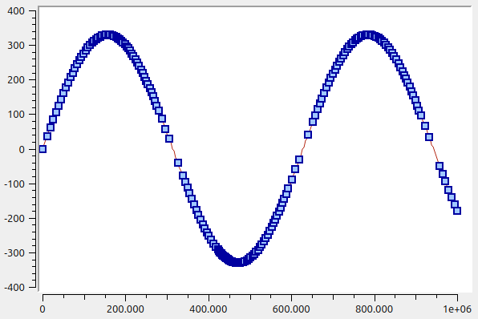
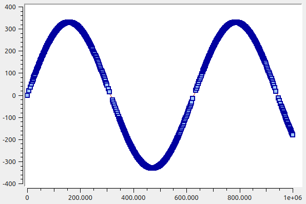
Der zweite Parameter der QwtWeedingCurveFitter-Klasse ist die chunk size, gesetzt mit QwtWeedingCurveFitter::setChunkSize(int).
Das Originalpolynom wird dabei in Stücke mit der gegebenen Brockengröße zerteilt und der Algorithmus wird auf die einzelnen Stücke individuel angewendet. Dabei wird dann pro Brocken aber mindestens ein Punkt generiert. Würde man also beim Beispiel oben eine Chunksize von 100000 wählen, so erhält man 200 Punkte (selbst bei Toleranz 10). Der Algorithmus hat dafür etwas weniger zu tun und ist nach ca. 50 ms fertig, statt wie bisher nach ca. 270 ms. Wenn man aber bedenkt, dass hier aus 10 Millionen Punkten ein sehr kleines Polynom mit weniger als 100 Punkten gemacht wird, ohne dass die Datenqualität sichtbar leidet, dann ist der Algorithmus (vor allem auf heutiger Hardware) insgesamt sehr schnell.
|
Der |
Optimierung der Zeichengeschwindigkeit mit QwtWeedingCurveFitter
Man könnte nun auf die Idee kommen, und den QwtWeedingCurveFitter zur Beschleunigung der Bildschirmdarstellung einsetzen - immerhin sind ja weniger Punkte zu zeichnen. Das kann man mit einem kleinen Benchmarkprogramm testen:
#include <QApplication>
#include <QPen>
#include <QElapsedTimer>
#include <QDebug>
#include <QTimer>
#include <cmath>
#include <qwt_plot.h>
#include <qwt_plot_curve.h>
#include <qwt_weeding_curve_fitter.h>
#include <qwt_plot_canvas.h>
class BenchmarkedPlotCanvas : public QwtPlotCanvas {
public slots:
// slot, when called, resizes parent QwtPlot window
void resizePlot() {
((QWidget*)parent())->resize(2400,1200);
}
protected:
void paintEvent(QPaintEvent * event) override {
QElapsedTimer timer;
timer.start();
QwtPlotCanvas::paintEvent(event);
qDebug() << "QwtPlotCanvas::paintEvent(): " << timer.elapsed() << "ms";
}
};
class BenchmarkedWeedingCurveFitter : public {
public:
QPolygonF fitCurve(const QPolygonF & polygon) const override {
QElapsedTimer timer;
timer.start();
const QPolygonF & stripped = QwtWeedingCurveFitter::fitCurve(polygon);
qDebug() << "QwtWeedingCurveFitter::fitCurve():"
<< polygon.count() << "->" << stripped.count()
<< "points: " << timer.elapsed() << "ms";
return stripped;
}
};
int main(int argc, char *argv[]) {
QApplication a(argc, argv);
QwtPlot plot;
plot.setContentsMargins(8,8,8,8);
// eigene Canvas-Klasse mit Benchmark-Wrapper einsetzen
BenchmarkedPlotCanvas * canvas = new BenchmarkedPlotCanvas;
plot.setCanvas(canvas);
plot.setCanvasBackground( Qt::white );
// Daten zum Darstellen generieren
QVector<double> x, y;
for (unsigned int i=0; i<10000000; ++i) {
x.append(i);
y.append(std::sin(i*0.00001));
}
QwtPlotCurve *curve = new QwtPlotCurve();
curve->setPen(QColor(180,40,20), 1);
curve->setRenderHint( QwtPlotItem::RenderAntialiased, true); // Antialiasing verwenden
curve->setSamples(x, y);
curve->attach(&plot); // Plot takes ownership
// WeedingCurveFitter mit Benchmark-Wrapper einsetzen
QwtWeedingCurveFitter * weedingFitter = new BenchmarkedWeedingCurveFitter;
curve->setCurveFitter(weedingFitter);
curve->setCurveAttribute(QwtPlotCurve::Fitted, true);
plot.show();
plot.resize(1000,800);
QTimer::singleShot(1000, canvas, &BenchmarkedPlotCanvas::resizePlot);
QTimer::singleShot(4000, &plot, &BenchmarkedPlotCanvas::close);
return a.exec();
}Im obigen Benchmarkprogramm sind die Klassen QwtPlotCanvas und QwtWeedingCurveFitter abgeleitet und die relevanten Zeichenroutinen mit Zeitmessung umgeben.
Wichtig zu vermerken ist, dass die Zeichenattribute FilterPoints und ClipPolygons (siehe Kapitel 5.6) standardmäßig eingeschaltet sind.
Führt man das Programm aus, so sieht man beim großen Plot mit Auflösung 2400x1200, dass aus den 10 Mio Punkten durch den QwtWeedingCurveFitter nur noch 284 Punkte übrig bleiben. Das müsste dann doch zu einem deutlich schneller gezeichneten Plot führen, oder?
| CurveFitter | FilterPoints | ClipPolygons | Fitter-Algorithmus [ms] | Zeichnen insgesamt [ms] |
|---|---|---|---|---|
an |
an |
an |
670 |
1260 |
an |
aus |
an |
660 |
1200 |
an |
an |
aus |
660 |
860 |
an |
aus |
aus |
660 |
820 |
aus |
an |
an |
--- |
320 |
aus |
aus |
an |
--- |
870 |
aus |
an |
aus |
--- |
320 |
aus |
aus |
aus |
--- |
550 |
In keiner Variante ist die Option mit WeedingFitter schneller. In der Ausgabe in fitCurve() fällt auf, dass unabhängig von der Option FilterPoints der WeedingFitter immer alle 10 Mio Punkte übergeben bekommt. Und auch der Polygon-Clipping-Algorithmus bekommt das originale Polygon übergeben.
Das führt dann dazu, dass obwohl der QwtWeedingCurveFitter letztlich das Polygon sehr stark verkleinert, der Mehraufwand in den Algorithmen durch den Wegfall des Punktefilterns enorm ist.
|
Qwt Interna
Wenn man das Kurvenattribut Wenn man das Rounding-Alignment direkt im Qwt-Quelltext trotz eingeschaltetem sieht man den wirklichen Einfluss des
Das ist marginal schneller als die Variante ohne |
Wie man sieht, bringt selbst ein Patchen des Qwt-Quelltextes keine signifikante Verbesserung. Daher lautet das finale Fazit: der QwtWeedingCurveFitter ist primär sinnvoll als Datenreduktionsfilter für Vektorplot-Datenexporte.
Verwendung zur Datenreduktion vorab
Man kann die Klasse QwtWeedingCurveFitter jedoch auch zu Datenreduktion außerhalb der QwtPlotCurve verwenden, d.h. man reduziert die der Kurve übergebenen Daten vorab. Und hier liegt das wirkliche Performancesteigerungspotential.
In diesem Fall benutzt man den QwtWeedingCurveFitter-Algorithmus, um damit die originale Datenreihe auszudünnen und der PlotCurve bereits ein kleineres Polygon zu übergeben. Folgende Quelltext nimmt die Punkte der originalen Datenreihe und überträgt sie in ein Polygon, welches dann dem QwtWeedingCurveFitter übergeben wird.
QwtWeedingCurveFitter zur Datenreduktion außerhalb des QwtPlot// use curve fitter to reduce data to plot
QPolygonF poly;
for (int i=0; i<x.count(); ++i)
poly << QPointF(x[i],y[i]);
QwtWeedingCurveFitter weedingAlgorithm(0.001);
poly = weedingAlgorithm.fitCurve(poly);
// set weeeded-out polygon in curve
curve->setSamples(poly);Die Funktion QwtWeedingCurveFitter::fitCurve(QPolygonF) liefert das entsprechend reduzierte Polynom zurück.
|
Wenn man den |
Nun benötigt der Algorithmus einmalig ca. 800 ms, aber das Zeichnen auf dem Bildschirm und Aktualisieren des Plots beim Plot-Größenänderungen dauert minimale 2 ms, und das ist eine wahrhaftige Performancesteigerung.
|
Eine wirklich enorme Performancesteigerung ist mit dem |
6. Intervallkurven
Eine spezielle Kurvenart ist die Intervallkurve, bereitgestellt über die Klasse QwtPlotIntervalCurve.
Im Prinzip ist das eine Kurve mit zwei y-Werten pro x-Koordinate im Datensatz. Es werden zwei reguläre Kurven gezeichnet und dazwischen wird die Fläche ausgefüllt. Dies kann man auch gut dazu nutzen, um gestapelte Liniendiagramme zu zeichnen.
QVector<double> x{1,2,5,6,10,12,15,16,17};
QVector<double> y1{2,2,3,4, 2, 4, 4, 5,11};
QVector<double> y2{6,4.4,9,10, 5.5, 5.7, 9, 11,12};
QVector<QwtIntervalSample> intervalSamples;
for (int i=0; i<x.count(); ++i)
intervalSamples.append(QwtIntervalSample(x[i],y1[i],y2[i]));
QwtPlotIntervalCurve *curve = new QwtPlotIntervalCurve();
curve->setStyle(QwtPlotIntervalCurve::Tube);
curve->setPen(QColor(0,40,180), 2);
curve->setBrush( QColor(60,200,255) );
curve->setRenderHint( QwtPlotItem::RenderAntialiased, true ); // Antialiasing verwenden
curve->setSamples(intervalSamples);
curve->attach(&plot); // Plot takes ownership
Die Funktion setSamples() gibt es in zwei Varianten:
-
QwtPlotIntervalCurve::setSamples( const QVector< QwtIntervalSample >& ): erwartet einen Vektor mit Interval-Samples, bestehend aus x-Koordinate, unterem und oberen y-Wert -
QwtPlotIntervalCurve::setSamples( QwtSeriesData< QwtIntervalSample >* ): erwartet einQwtSeriesDataObjekt (siehe Kapitel 4.2) welches Eigentum der Intervallkurve wird. Diese Funktion entspricht der FunktionsetData()der ElternklasseQwtSeriesStore.
Man kann das Erscheinungsbild noch etwas Aufwerten, wenn man für die Füllung der Kurve einen Gradienten verwendet. Dafür gibt man der Kurve einfach einen QBrush, der mit einem Gradienten erstellt wurde.
...
QLinearGradient grad(0,90,0,220);
grad.setColorAt(0, QColor(60,200,255));
grad.setColorAt(1, QColor(0,60,120));
curve->setBrush( QBrush(grad));
...
Die Colorstops der Gradienten in Qt werden in Pixelkoordinaten angegeben. Wenn man also das Plot-Fenster vergrößert/verkleinert, dann führt das zu witzigen Effekten:
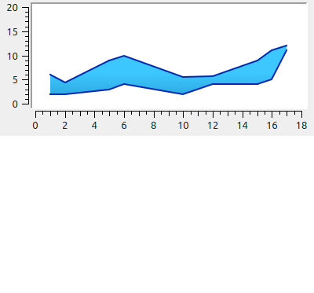 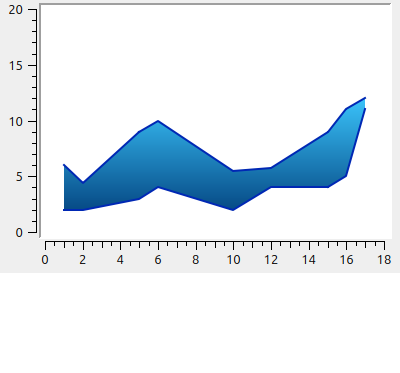
Die Lösung für das Problem besteht darin, die Klasse QwtPlotIntervalCurve abzuleiten und die Zeichenfunktion selbst zu implementieren.
class OwnPlotIntervalCurve : public QwtPlotIntervalCurve {
public:
void draw(QPainter * painter,
const QwtScaleMap & xMap, const QwtScaleMap & yMap,
const QRectF & canvasRect) const override
{
// min/max y-Pixel berechnen
QRectF br = boundingRect();
double topPixel = yMap.transform(br.top());
double bottomPixel = yMap.transform(br.bottom());
QLinearGradient grad(0,bottomPixel,0,topPixel);
grad.setColorAt(0, QColor(60,200,255));
grad.setColorAt(1, QColor(0,60,120));
const_cast<OwnPlotIntervalCurve*>(this)->setBrush( QBrush(grad));
// originale Zeichenfunktion aufrufen
QwtPlotIntervalCurve::draw(painter, xMap, yMap, canvasRect);
}
};Nun bleibt beim Zoomen, Verschieben oder beim Anpassen der Fenstergröße der Gradient an Ort und Stelle.
6.1. Gestapelte (Intervall-)Kurven/Flächendiagramme
Man kann die Intervallkurven auch nutzen, um gestapelte, ausgefüllte Kurven bzw. Flächendiagramme zu erstellen. Dazu erstellt man einfach mehrere QwtPlotIntervalCurve Zeichenelemente, die sich jeweils die gleichen X-Werte teilen, aber unterschiedliche Y-Werte haben.
QVector<double> x{1,2,5,6,10,12,15,16,17};
QVector<QVector<double> > y;
y.append( QVector<double>{0, 0, 0, 0, 0, 0, 0, 0, 0} );
y.append( QVector<double>{2, 2, 3, 4, 2, 4, 4, 5, 11} );
y.append( QVector<double>{6,4.4, 9, 8,5.5,5.7, 9, 11, 12} );
y.append( QVector<double>{7,6.6,12,10, 9, 11,12, 12, 13} );
const QColor cols[] = { QColor(96,60,20),
QColor(156,39,6),
QColor(212,91,18),
QColor(242,188,43)
};
for (int j=0;j<y.count()-1; ++j) {
QwtPlotIntervalCurve *curve = new QwtPlotIntervalCurve();
QVector<QwtIntervalSample> intervalSamples;
for (int i=0; i<x.count(); ++i)
intervalSamples.append(QwtIntervalSample(x[i],y[j][i],y[j+1][i]));
curve->setStyle(QwtPlotIntervalCurve::Tube);
curve->setPen(cols[j+1].darker(150), 2);
curve->setBrush(cols[j+1]);
curve->setZ(y.count()-j);
curve->setRenderHint( QwtPlotItem::RenderAntialiased, true ); // Antialiasing verwenden
curve->setSamples(intervalSamples);
curve->attach(&plot); // Plot takes ownership
}
|
Gestapelte Kurven kann man klassisch auch mit gefüllten Linienkurven erzeugen (siehe Kapitel 5.4), welche übereinander gezeichnet werden. Dazu müssen die Linien einen Brush erhalten und von hinten nach vorne gezeichnet werden. Mittels |
// Variablendeklarationen und Initialisierung wie oben
for (int j=y.count()-1;j>0; --j) {
QwtPlotCurve *curve = new QwtPlotCurve();
curve->setPen(cols[j].darker(150), 2);
curve->setRenderHint( QwtPlotItem::RenderAntialiased, true ); // Antialiasing verwenden
curve->setSamples(x, y[j]);
curve->setBrush(cols[j]);
curve->setZ(y.count()-j); // Zeichenreihenfolge über z-Wert setzen
curve->attach(&plot);
}Das Ergebnis ist fast das gleiche wie oben:
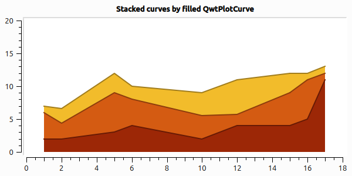
6.2. Berechnung von gestapelten Kurven aus Datenreihen
Gestapelte Kurven entstehen ja durch das Stapeln normaler Dateireihen. Diese müssen nicht zwingend die gleichen X-Werte pro Datenreihe verwenden und können positive und negative Zahlen haben. Um solche Daten korrekt zu stapeln und anzuzeigen ist etwas Vorbereitungsarbeit notwendig.
Beginnen wir mal mit drei einfachen Datenreihen, die direkt darstellt so aussehen:
// Originale Daten
QVector<double> x_initial{1, 2, 5, 6, 10};
QVector<QVector<double> > y;
y.append( QVector<double>{2, 1, -3, 4, 2} ); // rot
y.append( QVector<double>{6, 5, 3, 4, -5} ); // grün
y.append( QVector<double>{5, -6, -3, -2, 1} ); // blau
QVector<QColor> cols = {
QColor(0xb00000), // #a00000
QColor(0x20b000), // #208000
QColor(0x2000b0) // #200080
};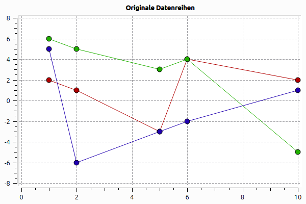
6.2.1. Nulldurchgänge bestimmen
Als Erstes muss man die Nulldurchgänge der Kurven bestimmen und an diesen Stellen neue Stützstellen mit y=0 einfügen. Das macht die Funktion addZeroCrossings():
... // wie bisher
// jede Datenreihe braucht einen eigenen X-Vector
QVector<QVector<double> > x(y.count());
for (int i=0; i<y.count(); ++i) {
x[i] = x_initial;
addZeroCrossings(x[i], y[i]); // x und y Vektoren werden verändert
}
...void addZeroCrossings(QVector<double> & x, QVector<double> & y) {
const int n = y.size();
if (n == 0)
return; // leere Kurven überspringen
QVector<double> newX, newY;
newX.reserve(x.size());
newY.reserve(x.size());
// Alle Originalpunkte und dazwischenliegende Intervalle durchlaufen
for (int i = 0; i < n; ++i) {
// Originale Punkte behalten
newX.append(x[i]);
newY.append(y[i]);
// Darauffolgendes Interval auf Nulldurchgang prüfen
if (i + 1 < n) {
double y0 = y[i], y1 = y[i + 1];
if ((y0 > 0.0 && y1 < 0.0) || (y0 < 0.0 && y1 > 0.0)) {
double denom = y0 - y1; // wird niemals 0
// X Wert interpolieren 0 = x_0 + (y1-y0)/(x1-x0)*x_0
newX.append(x[i] + (y0 / denom) * (x[i + 1] - x[i]));
newY.append(0);
}
}
}
x.swap(newX);
y.swap(newY);
}
6.2.2. Einheitliche Stützstellen berechnen
Um die Datenwerte addieren zu können, müssen die Stützstellen übereinstimmen. Also wird ein einheitliches X-Werte-Raster bestimmt und die jeweiligen fehlenden Werte werden interpoliert.
... // wie bisher
QVector<double> unifiedX;
mergeCoordinates(x, y, unifiedX); // unifiedX wird generiert und y Vektoren angepasst
...void mergeCoordinates(
const QVector<QVector<double> > & x,
QVector<QVector<double> > & y,
QVector<double> & unifiedX)
{
// Alle Koordinaten von allen Vektoren in ein einheitliches Set einfügen
std::set<double> xSet;
int seriesCount = x.count();
for (int k=0; k<x.count(); ++k)
for (double val : x[k])
xSet.insert(val);
// insert() ist eine potentiell langsame Operation, weil der Baum
// des Sets durchlaufen werden muss
unifiedX = QVector<double>(xSet.begin(), xSet.end());
// Nun alle x-Werte aller Serien durchlaufen und y-Werte für fehlende Stützstellen interpolieren.
// Da hinterher alle Datenreihen die gleichen Stützstellen haben,
// brauchen wir nur die y-Werte zu aktualisieren.
for (int k=0; k<seriesCount; ++k) {
if (x[k].count() == 0) {
// Kurve ist leer, mit 0-Werten auffüllen
y[k] = QVector<double>(unifiedX.count(), 0.0);
continue;
}
const QVector<double> & xk = x[k]; // Lesbarkeitsvereinfachung
QVector<double> & yk = y[k]; // Lesbarkeitsvereinfachung
QVector<double> newY; // Vektor für neue y-Werte
newY.reserve(unifiedX.size());
double xLast = xk.back();
int i_unified = 0; // Indexzähler für unifiedX Werte
int i = 0; // Indexzähler für x-Werte der aktuellen Serie
int n_unified = unifiedX.count();
int n = xk.count();
// Die x-Vectoren (unifiedX und xk) sind beide streng monoton steigend
while (i_unified < n_unified && i < n) {
// Fallunterscheidungen
// unifiedX[i_unified] < x[0] -> x[i_unified] und y=0 einfügen (auffüllen)
// unifiedX[i_unified] < xLast -> x[i_unified] und y=0 einfügen (auffüllen)
double xUni = unifiedX[i_unified];
if (xUni < xk[0] || xUni > xLast) {
newY.append(0);
++i_unified;
continue;
}
// Fall 1: x-Werte stimmen überein (gleiche Stützstelle)
if (xk[i] == xUni) {
newY.append(yk[i]);
++i;
++i_unified;
continue;
}
// Fall 2: x-Wert fehlt im Interval: Interpolation notwendig
double y1 = yk[i];
double y0 = yk[i-1];
double dx = xk[i] - xk[i-1];
// y = (x - x0)/(x1-x0)(y1-y0) + y0
double yinterpol = (xUni - xk[i-1])/dx*(y1-y0) + y0;
newY.append(yinterpol);
++i_unified; // nur den Zähler für den gemeinsamen X-Vector erhöhen
}
yk.swap(newY);
}
}
Nun kann man die Datenreihen addieren. Dabei werden jeweils die positiven und die negativen Anteile separat addiert und man erhält quasi zwei gestapelte Linienreihen, die aber gleichzeitig ins gleiche Diagramm gezeichnet werden.
... // wie bisher
// Datenreihen addieren
QVector<QVector<double> > yPos;
QVector<QVector<double> > yNeg;
computeStackedLinesWithNegative(y, yPos, yNeg);
// Farbe für die unterste Intervallgrenze einfügen
cols.prepend(Qt::black);
// Untere Intervallgrenze hinzufügen
QVector<double> nullVector(unifiedX.count(), 0.0);
yPos.prepend(nullVector);
yNeg.prepend(nullVector);
// die positiven Anteile als QwtPlotIntervalCurve hinzufügen
addIntervalCurve(plot, unifiedX, yPos, cols);
// und die negativen Anteile
addIntervalCurve(plot, unifiedX, yNeg, cols);void computeStackedLinesWithNegative(
const QVector<QVector<double> > & y,
QVector<QVector<double> > & yPos,
QVector<QVector<double> > & yNeg)
{
// y[0..n-1] sind die Rohdaten der Datenreihen.
int numSeries = y.count();
int numPoints = y[0].count();
QVector<double> posAccum(numPoints, 0.0);
QVector<double> negAccum(numPoints, 0.0);
QVector<QVector<double> > result;
for (int j = 0; j < numSeries; ++j) {
QVector<double> lower(numPoints), upper(numPoints);
for (int i = 0; i < numPoints; ++i) {
double v = y[j][i];
// Positive Werte in posAccum akkumulieren, negative in negAccum
if (v >= 0.0)
posAccum[i] += v;
else
negAccum[i] += v;
upper[i] = posAccum[i];
lower[i] = negAccum[i];
}
yNeg.append(lower);
yPos.append(upper);
}
}
// Hilfsfunktion zum Hinzufügen einer Intervallkurve
void addIntervalCurve(QwtPlot * plot,
const QVector<double> & x,
const QVector<QVector<double> > & y,
const QVector<QColor> & cols)
{
int numSeries = y.count()-1;
for (int j = 0; j < numSeries; ++j) {
QwtPlotIntervalCurve *curve = new QwtPlotIntervalCurve();
QVector<QwtIntervalSample> intervalSamples;
for (int i = 0; i < x.count(); ++i)
intervalSamples.append(QwtIntervalSample(x[i], y[j][i], y[j+1][i]));
curve->setStyle(QwtPlotIntervalCurve::Tube);
curve->setPen(cols[j+1].darker(150), 0);
curve->setBrush(cols[j+1].lighter(120));
curve->setZ(numSeries - j);
curve->setRenderHint( QwtPlotItem::RenderAntialiased, true );
curve->setSamples(intervalSamples);
curve->attach(plot);
}
}
6.2.3. Performancevergleich
Weiter oben hab ich ja schon darauf hingewiesen, dass man statt der QwtIntervalCurve auch ausgefüllte Kurven verwenden kann. In diesem Fall sieht der Plot-Code nach computeStackedLinesWithNegative() wie folgt aus:
// Positive Kurven hinzufügen
for (int j=yPos.count()-1;j>=0; --j) {
QwtPlotCurve *curve = new QwtPlotCurve();
curve->setPen(cols[j].darker(150), 0);
curve->setRenderHint( QwtPlotItem::RenderAntialiased, true ); // Antialiasing verwenden
curve->setSamples(unifiedX, yPos[j]);
curve->setBrush(cols[j].lighter(120));
curve->setZ(y.count()-j); // Zeichenreihenfolge über z-Wert setzen
curve->attach(plot);
}
// Negative Kurven hinzufügen
for (int j=yNeg.count()-1;j>=0; --j) {
QwtPlotCurve *curve = new QwtPlotCurve();
curve->setPen(cols[j].darker(150), 0);
curve->setRenderHint( QwtPlotItem::RenderAntialiased, true ); // Antialiasing verwenden
curve->setSamples(unifiedX, yNeg[j]);
curve->setBrush(cols[j].lighter(120));
curve->setZ(y.count()-j); // Zeichenreihenfolge über z-Wert setzen
curve->attach(plot);
}Das Ergebnis sieht fast identisch aus, mit dem Unterschied, dass bei den Intervallkurven am unteren Rand auch eine Begrenzungslinie gezeichnet wird.
Welches Verfahren ist jetzt schneller? Hier mal ein Beispiel aus der Praxis: Anfänglich 8760 Stundenwerte, nach dem Hinzufügen noch Nulldurchgängen und Vereinheitlichen des Rasters sind es knapp 10000 Datenpunkte.
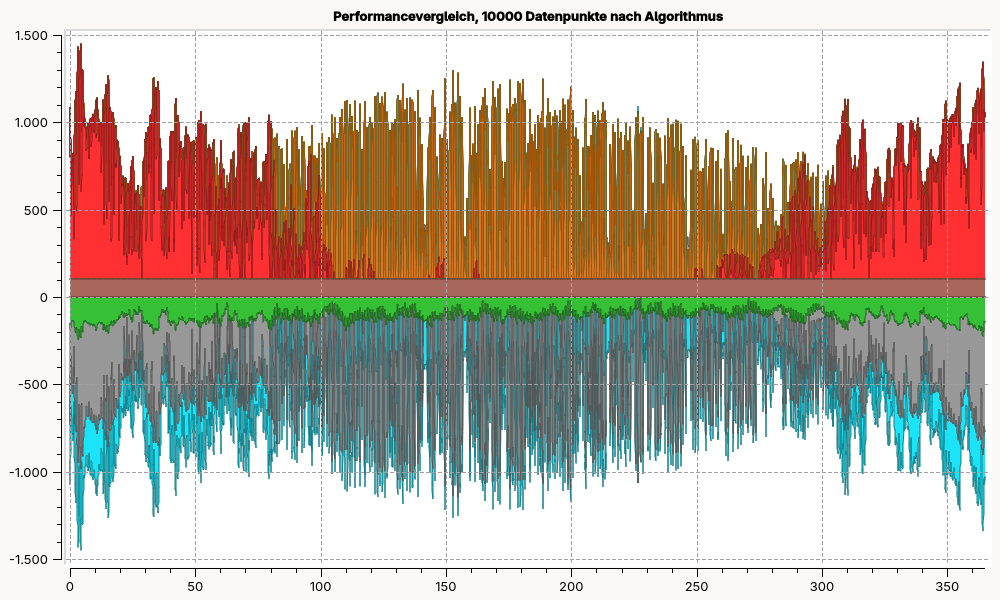
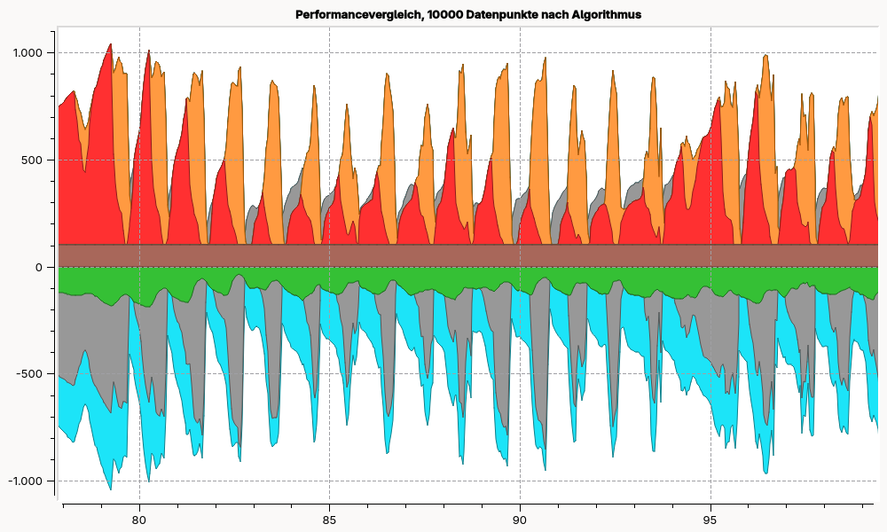
Zeit für das Neurendern des Plots nach Größenänderung auf 1920x1080 Auflösung:
- 800 ms für die Variante mit QwtIntervalCurve
- 530 ms für die Variante mit den ausgefüllten QwtPlotCurve
7. Balkendiagramme
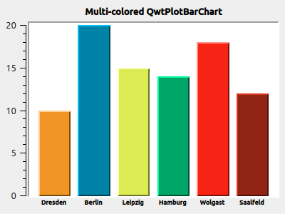
Balkendiagramme sind mit QwtPlot ebenfalls einfach möglich. Dabei gibt es verschiedene Varianten, je nach Datenlage:
-
ein Balken pro Intervall, nebeneinander oder gestapelt
-
mehrere Balken pro Intervall, nebeneinander oder gestapelt
-
mehrere Balken pro Intervall, nebeneinander und gestapelt (das geht z.B. mit Excel nicht!)
Als Zeichenelement/Diagrammtyp werden entweder QwtPlotBarChart oder QwtPlotMultiBarChart verwendet. Beide Klassen implementieren die Schnittstelle der abstrakten Basisklasse QwtPlotAbstractBarChart.
7.1. Grundlegende Eigenschaften der Plots
Für einfache Balkendiagramme verwendet man die Klasse QwtPlotBarChart. Wie auch schon bei QwtPlotCurve wird das Balkendiagramm-Zeichenelement auf dem Heap erstellt und dem Diagramm mit attach() übergeben.
QwtPlotBarChart * curve = new QwtPlotBarChart();
QVector<double> y{10,20,15,14,18,12};
curve->setSamples(y);
curve->attach(&plot); // Plot takes ownershipOhne weitere Anpassung sieht das Diagramm noch recht langweilig aus.
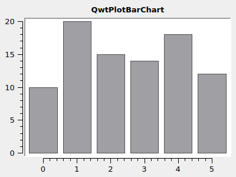
|
Die Funktion |
7.2. Bezugslinie
Standardmäßig beginnen die Balken bei 0. Mitunter will man aber relative Unterschiede bezogen auf eine Grundlinie einstellen. Dazu verwendet man setBaseLine(yPlotCoordinate).
QVector<double> y{10,20,15,14,18,12};
curve->setSamples(y);
curve->setBaseLine(15);
7.3. Layout und Abstände
Das Erscheinungsbild des Diagramms lässt sich vielfältig anpassen. Wenn man das Diagramm vergrößert und verkleinert, werden dabei die Achsen skaliert und passend dazu auch die Balken.
In der Standardeinstellung werden die Balken mit minimalem Abstand zueinander und vom Rand gezeichnet. Den Randabstand kann man mit setMargin(pixels) ändern und den Abstand zwischen den einzelnen Balken definiert man mit setSpacing(pixels).

Die Breite der Balken selbst wird über Layoutvorgaben und konkret über die Funktionen QwtPlotAbstractBarChart::setLayoutPolicy() und QwtPlotAbstractBarChart::setLayoutHint() kontrolliert.
7.3.1. AutoAdjustSamples
In diesem Modus, gesetzt durch
curve->setLayoutPolicy(QwtPlotAbstractBarChart::AutoAdjustSamples);wird die Größe der Balken basierend auf der Größe der Zeichenfläche und der gesetzen Rand- und Zwischenabstände bestimmt.
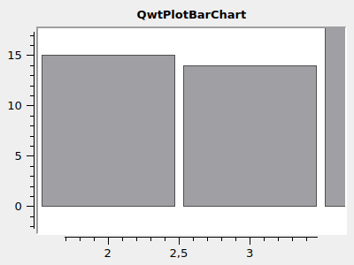
Die Balken, die Zwischenräume (spacing) und Randabstände (margin) füllen die Zeichenfläche komplett aus. Wie man am rechten Diagramm sieht, bleibt das auch beim Hineinzoomen ins Diagramm so.
Der zusätzliche Parameter setLayoutHint() definiert die Anzahl der Pixel, die ein Balken mindestens breit sein sollte. Damit kann man verhindern, dass beim Verkleinern der Plotgröße die Balken irgendwann komplett verschwinden. Folgendes Beispiel zeigt, was bei einem größeren LayoutHint im Modus AutoAdjustSamples passiert:
curve->setLayoutPolicy(QwtPlotAbstractBarChart::AutoAdjustSamples);
curve->setLayoutHint(100); // minimum width of bars is 100 pixels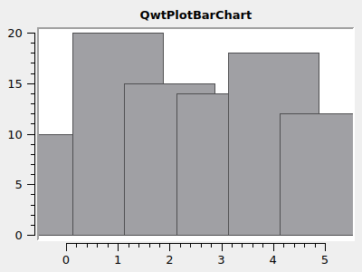
7.3.2. ScaleSamplesToAxes
In diesem Layoutmodus wird die Balkenbreite basierend auf der aktuellen x-Achsenskalierung festgelegt. Wenn man in diesem Layoutmodus den LayoutHint auf 0.5 setzt, dann wird ein Balken genau halb so breit wie ein Achsentick gezeichet und dann mittig am Achsentick ausgerichtet. Es wird also die X-Achse benutzt, um die 0.5 in Plotkoordinaten in Pixelbreiten der Zeichenfläche umzurechnen.
curve->setLayoutPolicy(QwtPlotAbstractBarChart::ScaleSamplesToAxes);
curve->setLayoutHint(0.5); // 0.5 axis scale as bar width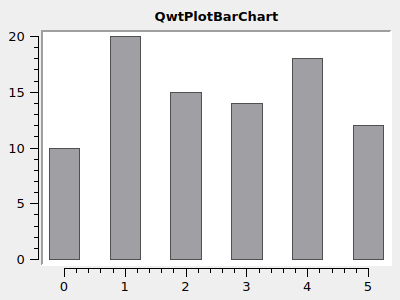 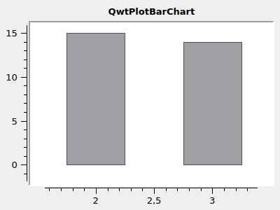
Auch beim Hereinzoomen orientiert sich die Balkenbreite stets an der X-Achsenskalierung.
|
Der Balkenabstand wird hier ausschließlich über den LayoutHint definiert und der Balkenabstand, den man mittels |
7.3.3. ScaleSampleToCanvas
In diesem Modus werden die Balkenbreiten in Abhängigkeit (als Prozentsatz) zur Zeichenflächengröße bestimmt. Man sollte sich zur Festlegung des LayoutHint-Parameters überlegen, wie viele Balken denn maximal im Diagramm sichtbar sein werden.
curve->setLayoutPolicy(QwtPlotAbstractBarChart::ScaleSampleToCanvas);
curve->setLayoutHint(0.1); // bar width 10% of canvas width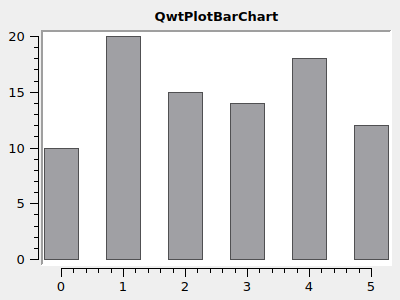 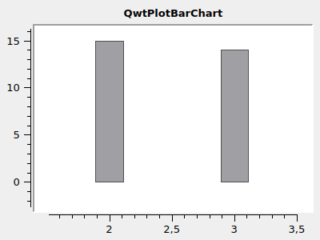
Beim Hereinzoomen bleibt die Balkenbreite konstant und ändert sich nur bei Größenänderung des Plots.
7.3.4. Layout-Empfehlung
Abgesehen von speziellen Anforderungen ist für die meisten Fälle die LayoutPolicy QwtPlotAbstractBarChart::ScaleSamplesToAxes empfehlenswert. Sowohl beim Größenändern des Plots als auch beim Zoomen verhält sich das Plot so, wie man es erwartet.
curve->setLayoutPolicy(QwtPlotAbstractBarChart::ScaleSamplesToAxes);
curve->setLayoutHint(0.8); // 0.8 axis scale as bar width
curve->setMargin(10); // 10 pixel marginMöchte man wirklich immer die gleichen Abstände zwischen den Balken haben, egal wie groß das Plot ist oder wie weit man hineinzoomt, dann ist die LayoutPolicy QwtPlotAbstractBarChart::AutoAdjustSamples zu empfehlen.
7.4. Balkenformen und Farben
Die Balken selbst werden durch die Klasse QwtColumnSymbol gezeichnet. Diese kann verschiedenartig konfiguriert werden. Standardmäßig wird der Symboltyp QwtColumnSymbol::Box verwendet, wie in nachfolgendem Beispiel:
QwtColumnSymbol* symbol = new QwtColumnSymbol( QwtColumnSymbol::Box );
symbol->setLineWidth( 2 );
symbol->setFrameStyle( QwtColumnSymbol::Raised );
symbol->setPalette( QPalette( QColor(0xff0040) ) );
curve->setSymbol( symbol );Angepasst werden können die Form des Rechteckrahmens (Raised, Plain, NoFrame), die Füllfarbe und Linienfarbe.

|
Wenn man ein |
Durch Anpassung individueller Palettenrollen kann man das Zeichnen der Balken anpassen.
QwtColumnSymbol* symbol = new QwtColumnSymbol( QwtColumnSymbol::Box );
symbol->setFrameStyle(QwtColumnSymbol::Plain);
symbol->setLineWidth(1);
QPalette palette(QColor(0xc1e311));
palette.setBrush(QPalette::Dark, Qt::black); // black frame
symbol->setPalette(palette);
curve->setSymbol( symbol );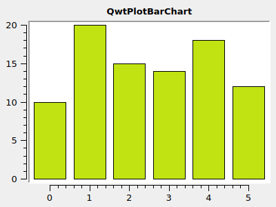
7.5. Balkenbeschriftung auf der X-Achse
Die in den bisherigen Beispieldiagrammen gezeigte X-Achse ist etwas ungewöhnlich für Balkendiagramme. Ohne jetzt auf Kapitel 11 vorgreifen zu wollen, soll hier doch die für Balkendiagramme typische Anpassung der x-Achse gezeigt werden.
Zunächst wird die Achsenzeichenfunktionalität angepasst, wofür man sich zunächst Zugriff auf die aktuelle Zeichenklassen QwtScaleDraw (Header QwtScaleDraw bzw. qwt_scale_draw.h) mit QwtPlot::axisScaleDraw() holt.
Dann schaltet man die Unterteilungsstriche (Ticks) und die Achsenlinie (Backbone) ab.
Um die unterschiedlichen Randeinstellungen des Plots besser zu verstehen, werden Balken mit ScaleSamplesToAxes und LayoutHint 1 (komplette Breite) gewählt, die Balkendiagrammränder (margins) auf 20 und der Zeichenflächenrand (umlaufend) auf 10 Pixel gesetzt.
Schließlich stellen wir noch sicher, dass das Plotlayout die y-Achse nicht direkt über dem x=0 Wert an den linken Rand der Zeichenfläche legt. Dies macht man durch Anpassung des QwtPlotLayout (Header QwtPlotLayout bzw. qwt_plot_layout.h). QwtPlotLayout::setAlignCanvasToScale() legt fest, ob die gewählte Achse direkt am Rand der Zeichenfläche liegt und damit die jeweils zugeordnete Achse (hier die x-Achse) eben mit dem 0-Wert direkt am linken Rand der Zeichenfläche liegt.
QwtScaleDraw* scaleDraw1 = plot.axisScaleDraw( QwtPlot::xBottom );
scaleDraw1->enableComponent( QwtScaleDraw::Backbone, false );
scaleDraw1->enableComponent( QwtScaleDraw::Ticks, false );
curve->setMargin(20); // margin left/right of bars
plot.plotLayout()->setCanvasMargin( 10 ); // canvas margin all around
// do not fix y-axis at 0 and left edge of canvas
plot.plotLayout()->setAlignCanvasToScale( QwtPlot::yLeft, false );
plot.updateCanvasMargins();Zum Vergleich nochmal das gleiche Diagramm ohne Ränder und mit setAlignCanvasToScale(yLeft, true).
QwtScaleDraw* scaleDraw1 = plot.axisScaleDraw( QwtPlot::xBottom );
scaleDraw1->enableComponent( QwtScaleDraw::Backbone, false );
scaleDraw1->enableComponent( QwtScaleDraw::Ticks, false );
curve->setMargin(0);
plot.plotLayout()->setCanvasMargin(0);
plot.plotLayout()->setAlignCanvasToScale( QwtPlot::yLeft, true );
plot.updateCanvasMargins();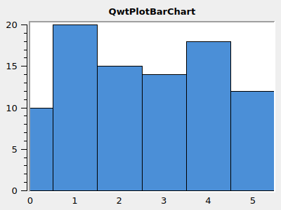
7.6. Balkenbeschriftungen
Möchte man statt der Zahlen am unteren Bildschirmrand Beschriftungen für die einzelnen Balken haben, musst man die Klasse QwtScaleDraw ableiten und dann die virtuelle Funktionen QwtScaleDraw::label() überschreiben.
class ScaleDraw : public QwtScaleDraw {
public:
ScaleDraw(const QStringList& labels ) : m_labels( labels ) {
enableComponent( QwtScaleDraw::Ticks, false );
enableComponent( QwtScaleDraw::Backbone, false );
setLabelAlignment( Qt::AlignHCenter | Qt::AlignVCenter );
}
virtual QwtText label( double value ) const QWT_OVERRIDE {
const int index = qRound( value );
if ( index >= 0 && index < m_labels.size() )
return m_labels[index];
return QwtText();
}
QStringList m_labels;
};Diese Klassenimplementierung konfiguriert die Darstellung der Unterteilungsstriche und Skalenlinie wie bisher, sorgt für korrekte Ausrichtung der Labels und merkt sich die im Konstruktor übergebenen Texte als indizierte Liste.
Entscheidend ist die Implementierung der Funktion QwtScaleDraw::label(). Diese Funktion hat die Aufgabe, passend zu den übergebenen Zahlenwerten (hier Werte der x-Achse) entsprechende Beschriftungen anzuzeigen. Wie am Anfang dieses Kapitels erwähnt, wird jedem Balken eine fortlaufende Nummer zugeordnet. Wenn die Achse nun also eine Zahl zeichnen will, also z.B. die 4, dann wird in der Funktion der Wert gerundet und als Index benutzt, um den dazugehörigen Text zurückzuliefern.
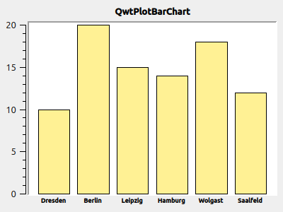 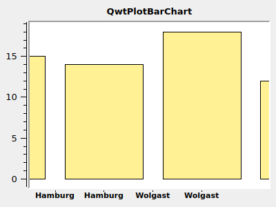
Das Problem mit dem hineinzoomen lässt sich durch eine minimale Erweiterung des Codes lösen (nur Labels dort zeichnen, wo der x-Achsen-Skalenwert gerundet ziemlich exakt einer ganzen Zahl entspricht):
if ( index >= 0 && index < m_labels.size() && qAbs(index-value) < 1e-6 )
return m_labels[index];
7.7. Mehrfarbige Balken
Wenn man die Balken nun auch noch individuell einfärben möchte, so kommt man um eine Re-Implemetierung des QwtPlotBarChart Zeichenelements nicht herum. Man muss eigentlich nur die Funktion QwtPlotBarChart::specialSymbol() reimplementieren und hier unterschiedlich gefärbte Balkensymbole zurückliefern.
class MultiColorBarChart : public {
public:
MultiColorBarChart() {
setLayoutPolicy(QwtPlotBarChart::ScaleSamplesToAxes);
setLayoutHint(0.8);
}
// we want to have individual colors for each bar
virtual QwtColumnSymbol* specialSymbol(
int sampleIndex, const QPointF&) const QWT_OVERRIDE
{
// generate symbol with color for each bar
QwtColumnSymbol* symbol = new QwtColumnSymbol( QwtColumnSymbol::Box );
symbol->setLineWidth( 2 );
symbol->setFrameStyle( QwtColumnSymbol::Raised );
QColor c( Qt::white );
if ( sampleIndex >= 0 && sampleIndex < m_colors.size() )
c = m_colors[ sampleIndex ];
symbol->setPalette( c );
return symbol;
}
QList<QColor> m_colors;
};Für jeden Balken im Diagramm speichern wir uns eine Farbe in der Membervariable m_colors. In der überschriebenen Funktion QwtPlotBarChart::specialSymbol() erstellen wir nun jeweils ein QwtColumnSymbol wie im vorangehenden Kapitel und liefern dieses zurück. Die Funktion übernimmt sowohl den Index des Balkens (oder samples) als Argument, wie auch die Plotkoordinaten des Balkens, wobei der x-Wert der Punktes wieder der Balkenindex ist, und der y-Wert dem Funktionswert des Balkens entspricht.
|
Die Funktion |
|
Wenn man nur bestimmte Balken einfärben möchte, die anderen aber im Standarddesign zeichnen lassen will, so kann man die Funktion |
7.8. Legendeneinträge
Für Balkendiagramme kann man zwei Arten von Legendeneinträgen erstellen:
-
einen Eintrag für das gesammte Balkendiagramm-Zeichenelement, oder
-
individuelle Einträge für jeden einzelnen Balken
Die erste Variante ist dann sinnvoll, wenn neben dem Balkendiagramm-Zeichenelement noch weitere Zeichenelemente mit Legendeneinträgen angezeigt werden. Im vorliegenden Fall ist eine individuelle Bezeichnung der Balken sinnvoll.
Dafür muss die virtuelle Funktion QwtPlotBarChart::barTitle() reimplementiert werden (die Standardimplementierung liefert immer einen leeren Titeltext). Außerdem muss der Legendentyp auf "einzelne Balken" durch Aufruf der Funktion QwtPlotBarChart::setLegendMode( QwtPlotBarChart::LegendBarTitles ) umgeschaltet werden. Zusätzlich kann man noch mit QwtPlotBarChart::setLegendIconSize() die Größe der Legendensymbole anpassen:
class MultiColorBarChart : public QwtPlotBarChart {
public:
MultiColorBarChart() {
setLayoutPolicy(QwtPlotBarChart::ScaleSamplesToAxes);
setLayoutHint(0.8);
// Legende zeigt individuelle Balkentitel
setLegendMode( QwtPlotBarChart::LegendBarTitles );
setLegendIconSize( QSize( 10, 14 ) );
}
// Individuelle Farben für die einzelnen Balken
virtual QwtColumnSymbol* specialSymbol(
int sampleIndex, const QPointF&) const QWT_OVERRIDE
{
// ... wie bisher
}
virtual QwtText barTitle( int sampleIndex ) const QWT_OVERRIDE {
if ( sampleIndex >= 0 && sampleIndex < m_titles.size() )
return m_titles[ sampleIndex ];
return QwtText();
}
QStringList m_titles;
QList<QColor> m_colors;
};Zusätzlich zu den Farben werden nun die Titel der Balken in der Membervariable m_titles gehalten und in jedem Aufruf von barTitle() zurückgeliefert.
Damit die Legende überhaupt gezeichnet wird, muss man diese für das Plot anzeigen:
// Legende anzeigen
QwtLegend * legend = new QwtLegend();
QFont legendFont;
legendFont.setPointSize(7);
legend->setFont(legendFont);
plot.insertLegend(legend, QwtPlot::RightLegend); // plot takes ownership
// x-Achse verstecken
plot.setAxisVisible(QwtPlot::xBottom, false);
7.9. Gestapelte Balkendiagramme oder Balkendiagramme mit mehreren Balken pro Gruppe
TODO
8. Spektrogramm- und Farbverlaufsdiagramme
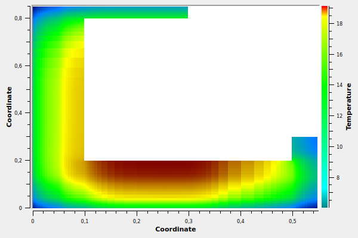
Spektrogramm ist in der Qwt Bibliothek die Bezeichnung für Farbverlaufsdiagramme, wobei der Pixelfarbe vom Zahlenwert abhängt. Es handelt sich um Visualisierungen von 3D-Daten, also x, y, z-Tuplen. x und y werden für die X- und Y-Achse verwendet, während der z-Wert an der jeweiligen Koordinate mittels Farbtabelle in einen Farbwert umgerechnet wird.
Grundsätzlich benötigt man für die Darstellung eines solchen Diagramms drei Komponenten:
-
Umrechnung der Bildkoordinaten zu Plotkoordinaten x,y. Diese Umrechnung wird durch die Achsenskalen realisiert (
QwtScaleEngine). -
Berechnung des z-Werts für diese x,y-Plotkoordinaten. Diese Funktionalität muss der Anwender beisteuern.
-
Berechnung eineszum z-Wert passenden Farbwerts. Dies kann mittels vorgefertigter Farbtabellen (
QwtColorMap, bzw.QwtAlphaColorMapoderQwtLinearColorMap) passieren, oder durch nutzerdefinierte Umrechnung.
8.1. Grundlagen des Spectrogram Plotelements
Das eigentliche Zeichnen übernimmt das Plotelement QwtPlotSpectrogram. Dies wird wie folgt konfiguriert:
QwtPlotSpectrogram * spectro = new QwtPlotSpectrogram("Some spectrogram");
spectro->setRenderThreadCount( 0 ); // Parallisierung je nach Systemstand verwenden
spectro->setCachePolicy( QwtPlotRasterItem::PaintCache ); // Bild nur neu rendern, wenn notwendig
spectro->attach(&plot);
// Datenhalteobjekt setzen, dieses liefert für jeden Bildpunkt einen z-Wert zurück.
spectro->setData( new SpectrogramData() );Die eigentlichen Daten werden mittels setData() gesetzt, wobei die Klasse SpectrogramData eine eigen geschrieben Klasse ist, welche von QwtRasterData ableitet:
class SpectrogramData : public QwtRasterData {
public:
SpectrogramData() {
// kleine Optimierung, spart extra Aufwand beim Prüfen auf Lücken
setAttribute(QwtRasterData::WithoutGaps, true);
// Wertebereiche definieren
m_intervals[Qt::XAxis] = QwtInterval(-1.5, 3);
m_intervals[Qt::YAxis] = QwtInterval(-1.5, 1.5);
m_intervals[Qt::ZAxis] = QwtInterval(0.0, 8.0);
}
// Diese Funktion liefert die Wertebereiche zurück und muss implementiert werden
virtual QwtInterval interval(Qt::Axis axis) const override {
if (axis >= 0 && axis <= 2)
return m_intervals[axis];
return QwtInterval();
}
// Dies ist die eigentliche Berechnungsfunktion, welche für eine x,y-Plotkoordinate den
// entsprechenden z-Wert zurückliefert.
virtual double value(double x, double y) const override {
double z = (x - 1) * (x - 1) + (y - 2) * (y - 1);
return z;
}
private:
QwtInterval m_intervals[3];
};Das ergibt dann ein Spektrogramm, welches mittels Standard-Farbtabelle eingefährt wird:
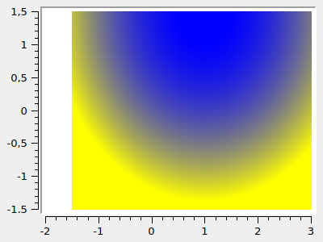
Der Farbwert ergibt sich aus dem von der Funktion value() zurückgelieferten Wert. Unter Verwendung des z-Wertebereichs, zurückgeliefert von QwtRasterData::interval(Qt::ZAxis), wird dieser Wert normalisiert (0 = min-z-Wert, 1 = max-z-Wert). Mittels dieses normalisierten Wertes wird dann aus der Farbtabelle die dazu passende Farbe gewählt.
8.1.1. Geschwindigkeitsoptimierungen
Das Spektrogramm berechnet jeden einzelnen Bildpunkt des Diagramms individuell und ruft dabei die Funktion QwtRasterData::value() auf. Die Auswertung dieser Funktion sollte komplett unabhängig von der Reihenfolge der berechneten Pixel sein, schon alleine, da es sich um eine const-Funktion handelt. Daher kann das perfekt parallelisiert werden.
Die QwtPlotSpectrogram-Klasse enthält eine parallelisierte Berechnungsfunktion und verwendet dabei standardmäßig alle verfügbaren CPUs/Threads. Die Anzahl der zu verwendenden Threads wird mittels QwtPlotSpectrogram::setRenderThreadCount(numThreads) festgelegt, wobei ein Wert von 0 die Standardanzahl der Threads festlegt.
|
Zum Debuggen der ausschalten. |
Ungeachtet der parallelen Auswertung der Funktion, dauert die Aktualisierung des Bildes einiges an Zeit, vor allem bei hohen Auflösungen. Um nicht bei jedem Anzeigen des Diagramms (ohne Größen- oder Datenänderungen) das Spektrogramm neu zu berechnen, kann man das generierte Pixmap cachen. Das wird mittels QwtPlotSpectrogram::setCachePolicy( QwtPlotRasterItem::PaintCache ) eingeschaltet. Sobald man aber die Daten ändert, d.h. QwtPlotSpectrogram::setData() aufruft, oder sonst irgendwelche Einstellungen des Plots ändert, wird das gecachte Bild neu berechnet.
|
Wenn man die im Spektrogramm intern gespeicherten Daten ändert, sodass sich bei Auswertung der Funktion |
8.1.2. Spektrogramme/Farbverlaufsdiagramme mit Löchern
Grundsätzlich kann ein Spektrogramme auch Löcher haben. Das wird dadurch erreicht, dass man für die betreffenden Plotkoordinaten einen NAN-Wert als z-Wert zurückgibt:
// Angepasste value() Funktion, welche eine Lücke im Bereich 0 < x < 0.5, 0 < y < 0.5 enthält
virtual double value(double x, double y) const override {
if ((x > 0.) && (x < 0.5) && (y > 0.) && (y < 0.5))
return qQNaN(); // NAN-z-Werte werden nicht gezeichnet
double z = (x - 1) * (x - 1) + (y - 2) * (y - 1);
return z;
}Zusätzlich muss man den Rasterdaten noch die Information mitgeben, dass Lücken zu berücksichtigen sind:
SpectrogramData() {
// Lücken berücksichtigen - dies ist die Standardeinstellung und müsste daher
// nicht explizit gesetzt werden
setAttribute(QwtRasterData::WithoutGaps, false);
...
}|
Bei Spektrogrammen ohne Lücken beschleunigt das Setzen des Attributs |
8.2. Farbverläufe anpassen
Wesentlich für das Erscheinungsbild des Spektrogramms ist die Zuordnung von Farben zu Zahlenwerten. Dies wird durch die Qwt-Hilfsklasse QwtColorMap realisiert (siehe detaillierte Beschreibung im Abschnitt [sec:QwtColorMap]).
Am Einfachsten ist die Verwendung der speziellen Implementierung QwtLinearColorMap, welche beispielsweise wie folgt konfiguriert wird:
LinearColorMap * cm = new LinearColorMap( QwtColorMap::RGB );
cm->setColorInterval(QColor(0x000080), QColor(0x800000));
cm->addColorStop(0.2, QColor(0x0080ff));
cm->addColorStop(0.5, QColor(0x00ff00));
cm->addColorStop(0.7, QColor(0xffff00));
// Colormap im Spektrogramm ersetzen
spectro->setColorMap( cm ); // takes ownershiptDie vielfältigen Anpassungsmöglichkeiten der Farbtabellenerstellen sind im Abschnitt [sec:QwtColorMap] beschrieben.
8.3. Spektrogramme basierend auf Datentabellen
Im anfänglichen Beispiel wurde der z-Wert basierend auf x und y Plotkoordinaten berechnet. Ein sehr viel häufigerer Anwendungsfall ist die Visualisierung von Messdaten. Nachfolgende ist ein Beispiel gezeigt, wie man dies sinnvoll implementiert.
class SpectrogramDataTable : public QwtRasterData {
public:
// Stützstellen x-Raster (Anzahl Zellen/Elemente entlang x-Achse + 1)
std::vector<double> m_xvalues;
// Stützstellen y-Raster (Anzahl Zellen/Elemente entlang y-Achse + 1)
std::vector<double> m_yvalues;
// Werte in den Zellen, m_zvalues[yIndex][xIndex]
std::vector<std::vector<double> > m_zvalues;
void updateIntervals() {
double minVal = std::numeric_limits<double>::max();
double maxVal = -std::numeric_limits<double>::max();
for (unsigned int j=0; j<m_zvalues.size(); ++j)
for (unsigned int i=0; i<m_zvalues[j].size(); ++i) {
double v = m_zvalues[j][i];
minVal = std::min(minVal, v);
maxVal = std::max(maxVal, v);
}
m_intervals[0].setInterval(m_xvalues.front(), m_xvalues.back());
m_intervals[1].setInterval(m_yvalues.front(), m_yvalues.back());
m_intervals[2].setInterval(minVal, maxVal);
}
// Diese Funktion liefert die Wertebereiche zurück und muss implementiert werden
virtual QwtInterval interval(Qt::Axis axis) const override {
if (axis >= 0 && axis <= 2)
return m_intervals[axis];
return QwtInterval();
}
// Diese Funktion sucht die zu den x,y-Koordinaten passende Zelle heraus und liefert den Wert zurück
virtual double value(double x, double y) const override {
// Außerhalb des Wertebereichs?
if ((x < m_xvalues.front()) || (y < m_yvalues.front()) ||
(x > m_xvalues.back()) || (y > m_yvalues.back()))
{
return qQNaN();
}
// Index mittels std::lower_bound() suchen
std::vector<double>::const_iterator it = std::lower_bound(m_xvalues.begin(), m_xvalues.end(), x);
unsigned int xIdx = it - m_xvalues.begin();
it = std::lower_bound(m_yvalues.begin(), m_yvalues.end(), y);
unsigned int yIdx = it - m_yvalues.begin();
// Spezialbehandlung:
// x = xMin -> xIdx == 0
// x > xMin -> xIdx == xIdx - 1 (da im ersten Interval)
// x == xMax -> xIdx == xIdx - 1 (da im letzten Interval)
if (xIdx > 0)
--xIdx;
if (yIdx > 0)
--yIdx;
Q_ASSERT(xIdx < m_xvalues.size()-1);
Q_ASSERT(yIdx < m_yvalues.size()-1);
return m_zvalues[yIdx][xIdx];
}
private:
QwtInterval m_intervals[3];
};Das Spektrogramm kann dann wie folgt konfiguriert werden:
// Datenhalteobjekt/Rasterdatenobjekt instanziieren
SpectrogramDataTable * data = new SpectrogramDataTable();
// 4 x 5 Zellen/Elemente
data->m_xvalues = {0,1,2,5,6};
data->m_yvalues = {0,0.1,0.2,0.3,0.4,0.5};
data->m_zvalues.push_back( { 1, 2, 3, 4} );
data->m_zvalues.push_back( { 1, 2.2, 3.5, 4} );
data->m_zvalues.push_back( { 1.4, 2.4, 3.7, 4.6} );
data->m_zvalues.push_back( { 1.5, 2.5, 3.9, 5.1} );
data->m_zvalues.push_back( { 1.5, 2.6, 4.2, 5.2} );
data->updateIntervals();
spectro->setData( data ); // takes ownershipDie Vektoren mit den Stützstellen/Gitterlinien haben jeweils ein Element mehr, da es bei 4 Elementen eben 5 Gitterlinien/Elementbegrenzungskoordinaten gibt.

9. Legende
9.1. Außenseitige Legende
…
9.2. Legenden-Zeichenelement
…
9.3. Eigene Legenden-Icons
Manchmal will man aber auch ganz eigene Icons anzeigen. Das kann man machen, wenn man eine der Kindklassen von QwtPlotItem ableitet und die virtuelle Funktion QwtPlotItem::legendIcon() überschreibt. In dieser kann man dann nach Herzenslust ein Bild malen/generieren und als QwtGraphic zurückliefern.
Das QwtGraphic Objekt wird wie ein gewöhnliches PaintDevice benutzt, d.h. man erzeugt einen QPainter damit und zeichnet drauflos.
Nachfolgendes Beispiel zeigt so eine Implementierung am Beispiel einer QwtPlotCurve:
class OwnPlotCurve : public QwtPlotCurve {
public:
QwtGraphic legendIcon(int, const QSizeF & ) const override {
QwtGraphic graphic;
QSizeF s(30,16); // Icongröße fixieren
graphic.setDefaultSize( s );
graphic.setRenderHint( QwtGraphic::RenderPensUnscaled, true );
QPainter painter( &graphic );
painter.setRenderHint( QPainter::Antialiasing, false);
// Mittellinie im Iconrechteck
const double y = 0.5 * s.height();
// Hintergrund zeichnen (für den schwarzen Rahmen)
QPen backgroundPen(Qt::black);
backgroundPen.setWidth(5);
backgroundPen.setCapStyle( Qt::FlatCap );
painter.setPen( backgroundPen );
QwtPainter::drawLine( &painter, 0.0, y, s.width(), y );
// Linienfarbe zeichnen)
QPen pn = pen();
pn.setCapStyle( Qt::FlatCap );
pn.setWidth(3);
painter.setPen( pn );
QwtPainter::drawLine( &painter, 1, y, s.width()-1, y );
return graphic;
}
};
Wenn man eher die Standard-Rechtecke bevorzugt, dann ist folgender Zeichencode ausreichend:
// ...
QRect r(0, 0, s.width(), s.height() );
painter.setPen(Qt::black);
painter.setBrush(pen().color());
painter.drawRect(r);
return graphic;was dann auch ganz schick aussieht:

|
Wenn man eigene Icons zeichnet, kann man auch wie im Beispiel oben die Größe des Icons fixieren. So hat man dann die komplette Kontrolle über das Erscheinungsbild und kann auch DPI-Skalierungen (für Highres-Bildschirme) mit einbeziehen. |
10. Markierungslinien
11. Plotachsen
Die Achsen/Skalen eines Plots (insgesamt 4, open, unten, links und rechts) können bereits in den mitgeliferten Klassenimplementierungen vielfältig angepasst und verändert werden. Und natürlich können die beteiligten Klassen auch abgeleitet und so beliebig modifiziert/geändert werden.
Die wichtigsten Klassen in Bezug auf die Achsen sind:
-
QwtAxis -
QwtAbstractScaleDrawund die SpezialisierungenQwtScaleDrawundQwtDateScaleDraw -
QwtScaleEngine`und die Spezialisierungen `QwtLinearScaleEngine`und `QwtLogScaleEngine
11.1. Allgemeine Achsenformatierung
11.2. Skalen
11.2.1. Fonts
Für das Zeichnen der Skalenbeschriftugn (Zahlen) und des Titels werden unterschiedliche Fonts verwendet.
Den Font für die Skalen muss man für jede sichtbare Skale individuell setzen, mit
plot→axisWidget(QwtPlot::xBottom)→setFont(f); plot→setAxisFont(QwtPlot::xBottom, f);
Für den Titel einer Achse ist es etwas komplizierter, da es verschiedene Möglichkeiten gibt, den Text zu setzen.
Einerseits kann man ein QwtText Objekt erstellen, diesen individuell konfigurieren und dann dem QwtScaleWidget geben:
QwtText title("Intensity"); QFont f; f.setPointSize(8); f.setBold(true); title.setFont(f);
plot→axisWidget( QwtAxis::YLeft )→setTitle( title );
plot→setAxisTitle( QwtAxis::YLeft, title );
Das ist allerdings häufig ziemlich viel Tipparbeit und man muss das Setzen des Fonts überall konsistent durchführen. Da man aber in der Regel den Achsentitel sowieso fett gedruckt haben will, kommt man da kaum drum herum.
Man kann auch einfach den Achsentext direkt setzen:
plot→setAxisTitle( QwtAxis::YLeft, "Intensity" ); plot→setAxisTitle( QwtAxis::YLeft, QwtText("Intensity") );
|
Aber Vorsicht: diese sehr ähnlich ausseheden Aufrufe führen nicht zum gleichen Ergebnis. Im ersten Fall wird ein bereits im QwtScaleWidget vorhandenes Bei der 2. Variante wird ein nagelneues |
12. QwtText und Sonderformatierungen
12.1. MathML
13. Interaktiver Zoom und Verschieben von Diagrammausschnitten
14. Anpassung/Styling der Qwt Komponenten
14.1. Allgemeines zu Farbpaletten
Die Qwt-Komponenten verwenden die Qt Palette und deren Farbrollen für die Einfärbung.
14.2. Rahmen und Zeichenfläche des Diagramms
Beim QwtPlot können verschiedene Elemente angepasst werden. Nachfolgend ist ein QwtPlot zu sehen, welches in einem äußeren Widget (dunkelgrau) eingebettet ist. Die hellgraue Fläche ist das eigentliche QwtPlot:

Im Screenshot sind die wichtigsten Attribute markiert:
-
Innenabstand (siehe
QWidget::setContentsMargins()) -
Rahmen (hauptsächlich für den Druck wichtig)
-
Hintergrund des Plot-Widgets
-
Zeichenfläche (engl. Canvas) (betrifft Hintergrundfarbe und Rahmen)
14.2.1. Farbe und Rahmen des Plots
Die Farbe des äußeren Bereichs des Plots wird über die Paletteneigenschaft des QwtPlot kontrolliert. Standardmäßig wird der äußere Rand des Plot-Widgets transparant gezeichnet, d.h. die Farbe des darunterliegenden Widgets ist sichtbar. Um eine eigene Farbe zu setzen, muss daher ```setAutoFillBackground(true)``` aufgerufen werden:
QPalette pal = plot.palette();
// Die QPalette::Window Farbrolle definiert die Einfärbung
// des äußeren Plotbereichs
pal.setColor(QPalette::Window, QColor(196,196,220));
plot->setPalette(pal);
// die Eigenschaft "autoFillBackground" muss dafür eingeschaltet sein
plot->setAutoFillBackground(true);
Hinweis: In Abschnitt [Gradient als Plot-Hintergrund](customization/#gradient-als-plot-hintergrund) wird beschrieben, wie man einen Farbverlauf im Plothintergrund umsetzt, und diesen bei Größenänderung entsprechend anpasst.
Der Rahmen wird wie bei einem normalen Widget angepasst:
plot->setFrameStyle(QFrame::Box | QFrame::Sunken);Normalerweise ist ein solcher Rahmen nicht notwendig für die Bildschirmdarstellung oder für das Einbetten des QwtPlot in eine Programmoberfläche. Der Rahmen ist jedoch häufig beim [Export/Druck](export) des Widgets sinnvoll.
14.2.2. Zeichenfläche
Die Zeichenfläche kann eingefärbt werden:
plot->setCanvasBackground(Qt::darkGray);
Der Randabstand zwischen Achsenbeschriftung und Titel zum Rand kann definiert werden:
plot->setContentsMargins(15,10,35,5);
Die Rahmen um die Zeichenfläche kann durch Anpassen des Zeichenflächenobjekts (QwtPlotCanvas) verändert werden. QwtPlotCanvas ist von QFrame abgeleitet, wodurch es entsprechend angepasst werden kann. Es wird einfach neues Objekt erstellt, konfiguriert und dem Plot übergeben (das QwtPlot wird neuer Besitzer des Zeichenflächenobjekts):
QwtPlotCanvas * canvas = new QwtPlotCanvas(&plot);
canvas->setPalette(Qt::white);
canvas->setFrameStyle(QFrame::Box | QFrame::Plain );
canvas->setLineWidth(1);
plot->setCanvas(canvas);
Einfacher geht es durch Setzen des Stylesheets für das Canvas-Widget (siehe Qt-Widgets Dokumentation, welche Attribute unterstützt werden):
plot->canvas()->setStyleSheet(
"border: 1px solid Black;"
"border-radius: 15px;"
"background-color: qlineargradient( x1: 0, y1: 0, x2: 0, y2: 1,"
"stop: 0 LemonChiffon, stop: 1 PaleGoldenrod );"
);
15. Exportieren und Drucken
Neben der Anzeige auf dem Bildschirm ist das Speichern schicker Diagramme und Verwendung dieser in Berichten eine nicht unwichtige Aufgabe. Allerdings ist es nicht trivial, gute Diagramme mit sinnvollen Schriftgrößen zu exportieren. Grundsätzlich muss hier zwischen Pixelgrafik-Export und Vektorgrafik unterschieden werden.
15.1. Exportieren des Plots als Pixelgrafik
Der naheliegenste Export des Plots ist eine 1-zu-1 Kopie in die Zwischenablage oder in eine Bitmapdatei (jpg, gif, png,…).
15.1.1. Erstellen einer 1-zu-1 Kopie des Plotwidgets
Jedes QWidget kann direkt in eine QPixmap gezeichnet werden. Und dieses kann dann in eine Datei gespeichert werden.
// Plot in Pixmap rendern
QPixmap p = plot.grab();
// Pixmap in Datei speichern
p.save("diagramm_screenshot.png");Das Diagramm aus dem Tutorial 1 (Kapitel 2) sieht exportiert als PNG-Build so aus:

|
Die Funktion |
|
Der Widget-Titel wurde mit |
15.1.2. Kopie in die Zwischenablage
Statt das Pixmap in eine Datei zu speichern, kann man das auch einfach in die Zwischenablage kopieren. Dazu QClibBoard und QApplication einbinden und:
// Plot in Pixmap rendern
QPixmap p = plot.grab();
// Pixmap in Zwischenablage kopieren
qApp->clipboard()->setImage(p.toImage());15.1.3. QwtPlot mit anderer Auflösung abspeichern
Wenn das QwtPlot mit einer anderen Auflösung/Pixelgröße als angezeigt auf dem Bildschirm abgespeichert werden soll, so verwendet man die QwtPlotRenderer:
// Render-Objekt erstellen
QwtPlotRenderer renderer;
// Zielgröße festlegen
QRect imageRect( 0.0, 0.0, 1200, 600 );
// Bildobjekt in der entsprechenden Größe erstellen...
QImage image( imageRect.size(), QImage::Format_ARGB32 );
// und mit weißem Hintergrund füllen
image.fill(Qt::white);
// Das Diagramm in das QImage zeichnen
QPainter painter( &image );
renderer.render( &plot, &painter, imageRect );
painter.end();
// QImage zurück in Pixmap konvertieren
QPixmap plotPixmap( QPixmap::fromImage(image) );
plotPixmap.save("diagram.png");Das Diagramm aus dem Tutorial 1 (Kapitel 2) sieht dann z.B. so aus:
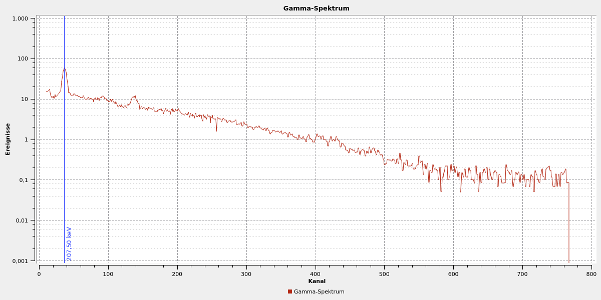
|
Wenn man dieses Diagramm und das vorherige der 1-zu-1 Kopie vergleicht, so stellt man fest, dass Fontgrößen, Linienstärken und manche Randabstände (z.B. bei der vertikalen Markierung) gleich geblieben sind. Die Achsenskalierung und damit auch das Gitterraster und Achsenbeschriftungen haben sich jedoch aufgrund der höheren Auflösung verändert. Das kann man sich zu Nutze machen, wenn z.B. Achsenbeschriftungen auf dem Bildschirm nicht komplett ins Diagramm passen und nun aufgrund höherer Auflösung geschrieben werden können. Allerdings birg dies auch die Gefahr, dass die Schriftgrößen im Ausdruck zu klein werden. Das ist aber eher ein Problem beim Vektorexport und wird im Kapitel 15.1.9 thematisiert. |
15.1.4. Drucken
Beim Drucken wird das Bild einfach auf eine Druckerzeichenfläche gerendert. Für die Druckunterstützung mit im Qt-Programm zunächst die pro-Datei erweitert werden:
QT += printsupportMan erstellt und konfiguriert ein Printerobjekt:
QPrinter printer( QPrinter::HighResolution );
printer.setCreator("Ich"); // only for exporting to (PDF) files
printer.setDocName("Mein Plot"); // only for exporting to (PDF) files
printer.setPageOrientation( QPageLayout::Landscape );Dann kann der Anwender noch den Drucker auswählen:
QPrintDialog dialog( &printer );
if ( dialog.exec() ) {
QwtPlotRenderer renderer;
renderer.renderTo( &plot, printer );
}Und schon wird das Bild auf den Drucker oder PDF-Drucker geschoben.
|
Die Druckereigenschaften creator und docName werden bei PDF-Druckern als Eigenschaften in der PDF-Datei abgelegt. Für normale Drucker sind die nicht notwendig. |
Wichtig bei Druckern ist die zu verwendende Auflösung. Dies wird im Konstruktor der QPrinter-Klasse eingestellt:
-
QPrinter::HighResolutionlegt die Druckauflösung wie beim eingestellten Drucker fest (bzw. 1200 DPI bei PDFs) -
QPrinter::ScreenResolutionlegt die Auflösung wie auf dem aktuellen Bildschirm fest, üblicherweise also 72 DPI. Dadurch wird das gedruckte Diagramm ziemlich genau so aussehen, wie auf dem Bildschirm angezeigt
Man kann auch manuell die zu verwendende Auflösung durch Aufruf von QPrinter::setResolution() vorgeben.
Das Zusammenspiel von Auflösung und Druckgröße wird in Kapitel 15.1.9 beschrieben.
15.1.5. PDF Export mittels QPdfWriter
Statt PDFs via PDF-Drucker zu erzeugen, kann man auch den durch Qt bereitgestellten QPdfWriter verwenden:
QPdfWriter writer("plot.pdf");
writer.setTitle("Mein plot");
writer.setCreator("Ich");
writer.setPageSize(QPageSize::A4);
writer.setPageOrientation(QPageLayout::Landscape);
renderer.renderTo( &plot, writer);15.1.6. SVG Export mittels QSvgDocument
SVG Export erfolgt mittels der Klasse QSvgGenerator. Für die SVG-Unterstützung muss zunächst die Qt pro-Datei erweitert werden:
QT += svgDann erstellt und konfiguriert man das Generatorobjekt und rendert in das SVG-Generator-Paintdevice.
generator;
generator.setFileName("plot.svg");
generator.setSize(QSize(600, 400));
generator.setViewBox(QRect(0, 0, 600, 400));
generator.setTitle("Mein Plot");
generator.setResolution(72);
generator.setDescription("Ein SVG-Plot");
renderer.renderTo( &plot, generator);|
Wendet man obigen Code auf das Diagramm im ersten Tutorial an, so wird beim Betrachten des SVG-Dokuments keine Linie angezeigt. Das liegt daran, dass der SVG-Generator im Gegensatz zum Pixel-Renderer oder PDF-Writer nicht mit NAN-Werten umgehen kann. Diese entstehen häufig unbewusst, z.B. in diesem Beispiel beim Logarithmieren von 0-Werten durch Auswahl einer entsprechenden y-Achsenskalierung. Auf dem Bildschirm wird die Linie zwar trotzdem korrekt angezeigt, aber beim SVG Export wird eine Kurve (intern Polylinie) nur bis zum ersten Erscheinen eines NAN-Werts gezeichnet. Ist zufälligerweise der erste Wert bereits ein NAN (wir hier der Fall, da aus dem erstem Wert 0 beim Logarithmieren ein NAN wird), so fehlt die Kurve im Export und man sucht dann zumeist sehr lange, bis man den Fehler gefunden hat. |
Die Angabe der Auflösung mit QSvgGenerator::setResolution() definiert zusammen mit der gegebenen Größe die finale Auflösung des Bildes. Je höher die Auflösung, umso größer sind Font und Stiftbreiten. In diesem Zusammenhang unterscheidet sich der SVG-Export vom PDF-Export/Drucken.
Ein generiertes SVG-Dokument kann man auch in die Zwischenablage kopieren. Dazu definiert legt man im QSvgGenerator ein alternatives Ausgabegerät an (mit QSvgGenerator::setOutputDevice()) und
// Puffer als Ausgabegerät festlegen
QBuffer b;
generator.setOutputDevice(&b);
renderer.renderTo( &plot, generator);
// Puffer als MimeData in die Zwischenablage legen
QMimeData * d = new QMimeData();
d->setData("image/svg+xml",b.buffer());
QApplication::clipboard()->setMimeData(d,QClipboard::Clipboard);15.1.7. EMF Export unter Windows
Qt bringt keine eigene Unterstützung für das Erstellen von EMF-Dateien mit. Diese sind mitunter aber ganz praktisch, wenn man Diagramme direkt in PowerPoint, Word oder sonstige Microsoft Software einfügen möchte.
Es gibt verschiedene EMF-Generator-Bibliotheken (open-source und kommerzielle), die man dafür gut verwenden kann. Das Vorgehen entspricht genau dem bisher gezeigten: QwtPlotRenderer erstellen und konfigurieren und dann in das Exportobjekt rendern (also in das QPaintDevice des Exportobjekts).
15.1.8. Anpassen des gerenderten Plots
Zwischen einem auf dem Bildschirm angezeigten Plot und einem Ausdruck gibt es häufig diverse Unterschiede. So möchte man bei schwarz-weiß-Ausdrucken wahrscheinlich keinen bunten Hintergrund des Diagramms drucken und auch der Rand des Plots soll nicht in Widget-Farben gedruckt werden. Derartige Anpassungen macht man direkt im QwtPlotRenderer über verschiedene Layout-Anpassungsfunktionen.
Man kann den Renderer anweisen, bestimmte Elemente nicht zu zeichnen:
// kein Hintergrund des Widgets
renderer.setDiscardFlag( QwtPlotRenderer::DiscardBackground );
// Keinen Zeichenflächenhintergrund
renderer.setDiscardFlag( QwtPlotRenderer::DiscardCanvasBackground );
// keinen Rahmen um die Zeichenfläche
renderer.setDiscardFlag( QwtPlotRenderer::DiscardCanvasFrame );
Zusätzlich könnte man noch weitere Dinge ausblenden:
-
Titel mit
QwtPlotRenderer::DiscardTitle(da man häufig Diagrammtitel ja in die Diagrammbeschriftung schreibt) -
Legende mit
QwtPlotRenderer::DiscardLegend -
Footer mit
QwtPlotRenderer::DiscardFooter(falls das Plot so einen hat, siehe [sec:plotFooter])
Damit kann das Plot gedruckt schon ganz ordentlich aussehen. Man kann das Erscheinungsbild aber für einen Ausdruck noch ändern, indem man einen flachen Rahmen mit angedockten Skalen zeichnet.
renderer.setLayoutFlag( );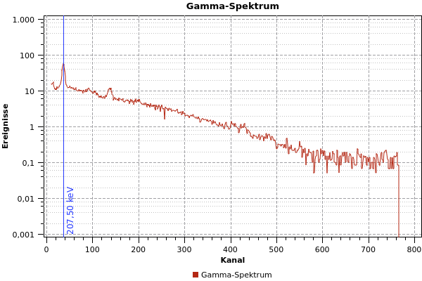
Die linke untere Ecke des Diagramms ist hier nicht direkt am Punkt (0, 0,001). Das kann man erzwingen, wenn man die Zeichenfläche an alle vier Achsen ausrichtet:
plot.plotLayout()->setAlignCanvasToScale( QwtPlot::yLeft, true );
plot.plotLayout()->setAlignCanvasToScale( QwtPlot::xBottom, true );
plot.plotLayout()->setAlignCanvasToScale( QwtPlot::yRight, true );
plot.plotLayout()->setAlignCanvasToScale( QwtPlot::xTop, true );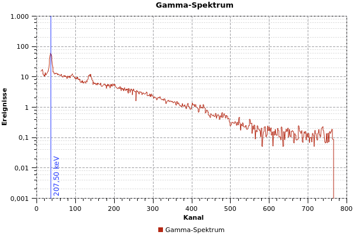
15.1.9. Diagrammelemente skalieren (DPI ändern)
Wie schon oben beschrieben, wird bei unterschiedlicher Druck-Pixelgröße die Skalierung von Plotelementen neu berechnet. Bei modernen Druckern sind Auflösungen von 600 bzw. 1200 DPI normal, was bei einem A4-Ausdruck zu sehr hohen Pixelgrößen führt und einzelne gedruckte Pixel sind im Ausdruck nicht mehr zu erkennen.
|
Bei Ausgabe des Plots als Vektorgrafik, vor allem beim Drucken oder Ausgabe in PDF-Dateien, müssen alle Plotelement mit skalierbaren Größen festgelegt sein. Dies ist insbesondere für alle Definitionen eines |
Die Skalierung von Schriftgrößen und Linienbreiten wird über die Auflösung (angegeben in DPI) des gewählten Zeichengeräts festgelegt. Zusammen mit der Pixel-Größe des Plots ergibt sich dann das finale Erscheinungsbild der Diagramms, welches durchaus von dem Bild auf dem Bildschirm abweichen kann.
Beim Export eines Plots als Vektorgrafik (PDF oder SVG-Dokument) sind Schriftgröße und Linienstärke Eigenschaften der exportierten Vektorelemente. Wichtig ist hierbei, dass bei allen Zeichenelementen Stiftbreiten (auch als Dezimalzahl) angegeben werden.
Exportiert man das Diagramm als PDF, werden die Skalenlinien nur als kosmetische Linien mit einem Pixel Breite exportiert (d.h. beim Hineinzoomen bleiben diese Linien immer exakt ein Pixel breit). Alle anderen Diagrammelemente werden entsprechend skaliert.

Auch bei den Skalen darf man nicht vergessen, den Zeichenstift (QPen) entsprechend zu setzen.
plot.axisScaleDraw(QwtPlot::xBottom)->setPenWidthF(1);
plot.axisScaleDraw(QwtPlot::yLeft)->setPenWidthF(1);Bei gewähltem Rendermodus QwtPlotRenderer::FrameWithScales verwendet QwtPlot die breiteste Zeichenbreite der für die einzelnen sichtbaren Skalen gesetzten Stifte.
|
Bis zur Qwt-Plot Version 6.1.3 werden die Stiftbreiten für das Zeichnen des Rahmens auf Integerwerte (ab-)gerundet. Daher führen Stiftbreiten < 1 stets zu einem kosmetischen Stift für den umliegenden Rahmen. Daher sollte man immer eine Stiftbreite von 1 für den Rahmen verwenden, oder eben auf die Option |
Beim SVG-Generator kann man durch Veränderung des DPI-Werts das Diagramm skalieren.
Analog gilt das auch, wenn mittels QwtPlotRenderer eine Pixelgrafik gerendert wird.
Bei den anderen Exportformaten ist die DPI-Zahl nur eine Zusatzinformation für das Anzeigeprogramm, wie das jeweilige Bild zu skalieren ist. Da aber alle Größen und Abstände relativ in der Datei abgelegt sind, und Schriftgrößen und Linienstärken Attribute der Vektorelemente sind, ändert sich das Erscheinungsbild des Diagramms beim PDF-Export/Druck nicht in Abhängigkeit der DPI-Zahl.
Beim Ausdruck/Export in PDF ist aber die Zielgröße entscheident für das finale Erscheinungsbild, nachfolgend mal am Vergleich des Exports in A4 Format und A5 Format gezeigt:
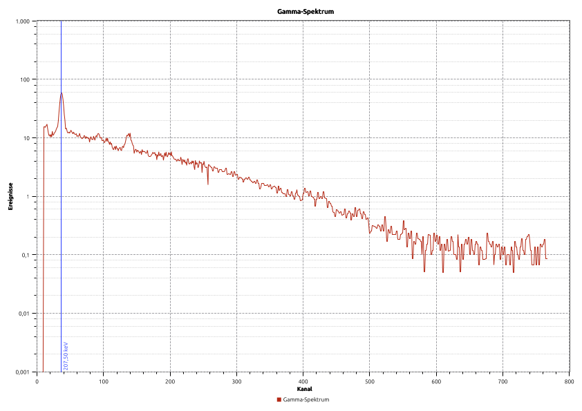

Wie man gut sieht, sind Zeichenelemente und Schriftgrößen aufgrund der gleichen DPI-Zahl identisch groß. Durch die unterschiedliche Zielgröße wird aber das Diagramm unterschiedlich gelayouted und die Skalen anders berechnet.
|
Wenn man konsistente Diagramme in Berichten verwenden möchte, bei denen Schriftgrößen und Linienstärken immer gleich groß sind, dann braucht man beim Vektorexport nur stets die gleiche DPI-Zahl einstellen und das Bild ohne Skalierung einfügen (100% Größe). Mitunter sind die Fonts im Diagramm aber zu klein oder zu groß, oder man möchte das Diagramm verkleinert im Bericht haben, um mehr Beschriftungsdetails zu bekommen. Die alternative wäre, im Diagramm die Fonts und Linienstärken vor dem Export entsprechend zu vergrößern/verkleinern. So könnte man das exportierte Diagramm eventuell mit 75% Vergrößerung in den Bericht übernehmen, oder wahlweise auf eine feste Breite (z.B. Seitenbreite) skalieren. Im letzteren Fall, also immer, wenn beim Einfügen konkrete Höhen/Breiten festgelegt werden, sollte man sicherstellen, dass das Verhältnis von Exportgeometrie und Importgeometrie stets identisch ist. Denn nur so stellt man sicher, dass Schriftgrößen in unterschiedlich großen Diagrammen dennoch stets gleich bleiben. |
16. Fortgeschrittene Themen
Die nachfolgend vorgestellten Themen greifen in die internen Datenstrukturen der Qwt-Bibliotheksklassen ein und diese könnten sich in zukünftigen Bibliotheksversionen sicher nocheinmal deutlich ändern. Daher sind diese Techniken mit Vorsicht zu genießen!
16.1. Objekte aus dem QwtPlot loslösen
Die API des QwtPlot geht davon aus, dass Objekt beim Hinzufügen/Ersetzen existierender Plotelemente das Plot als neuen Eigentümer erhalten. Sobald ein Plotelement ein vorheriges Plotelement ersetzt, löscht das QwtPlot das alte Objekt automatisch. Es gibt keine release-Funktionen, wie man die von shared pointer-Implementierungen kennt. Daher kann man einmal hinzugefügte Objekte nicht entfernen, anpassen und wieder neu hinzufügen.
Bei Plotelementen, welche mittels QwtPlotItem::attach() hinzugefügt wurden, kann man das Element einfach mit QwtPlotItem::detach() wieder entfernen.
Bei der Legende geht das so jedoch nicht.
TODO den entfern-Trick erklären…
16.2. Splines und Bézier-Kurven
Die Qwt-Bibliothek bringt eine Reihe von Spline-Interpolationsalgorithmen mit, welche auch abseits der QwtCurveFitter-Funktionality (siehe Kapitel 5.7) genutzt werden können. Hier ist nochmal ein Überblick:

QwtSplineDirekt zu verwenden sind die Klassen:
QwtSplinePleasing
QwtSplineLocal
QwtSplineCubic
Jede dieser Spline-Implementierungen implementiert zwei Funktionen, welche man für das Generieren von Splines aus gegebenen Stützstellen benutzen kann:
-
QwtSpline::polygon()- interpoliert das Polygon stückweise mittels Bézier-Kurven und generiert daraus einen Polygonzug alsQPolygonFmit Punkten, welche die Spline approximieren -
QwtSpline::painterPath()- berechnet die Bézier-Kontrolllinien und berechnet dann stückweise kubische Funktionen zwischen den Stützstellen und fügt diese mittelsQPainterPath::cubicTo()zum PainterPath hinzu
Die Funktion QwtSpline::polygon( const QPolygonF&, double tolerance ) generiert eine Bézierkurve, oder genau genommen approximiert diese mittels eines Polygonzugs.
Das erste Argument ist das Polygon mit den zu fittende Stützstellen und das zweite Argument die Toleranz. Die Funktion liefert selbst einen Linienzug als QPolygonF zurück, welcher dann weiter verwendet werden kann. Die Anzahl der Stützstellen im Polygonzug wird durch die Toleranz so definiert, dass die maximale Abweichung zwischen dem Liniensegment und der originalen Splinekurve diese Toleranz nicht überschreitet. Damit werden in Bereichen stärkerer Krümmung mehr Punkte gesetzt als in eher linearen Abschnitten der Kurve, wie man gut im nachfolgenden Beispiel sieht. Je kleiner die Toleranz, umso mehr Punkte werden verwendet.
QVector<double> x{1,2,5,6,10,12,15,16,8};
QVector<double> y{5,4,8,8, 4, 5, 8, 9,10};
QPolygonF poly;
for (int i=0; i<x.count(); ++i)
poly << QPointF(x[i],y[i]);
// Spline-Implementierung (hier QwtSplinePleasing) erstellen
QwtSplinePleasing spline;
// Polygon generieren
QPolygonF splinePoly = spline.polygon(poly, 1e-2);Die Stützstellen der Beispielkurve oben werden in einen Polygonzug gesteckt und durch die Spline in einen neuen Polygonzug konvertiert. Die Toleranz von 0.01 erzeugt hier 95 Punkte. Plottet man die generierte Kurve im Vergleich zu der mittels QwtSplineCurveFitter generierten Kurve, so sehen beide Linien auf den ersten Blick identisch aus. Wie man auch gut sehen kann, werden die Punkte in den Krümmungsstellen stärker geclustert.

Hineingezoomt erkennt man jedoch Unterschiede:
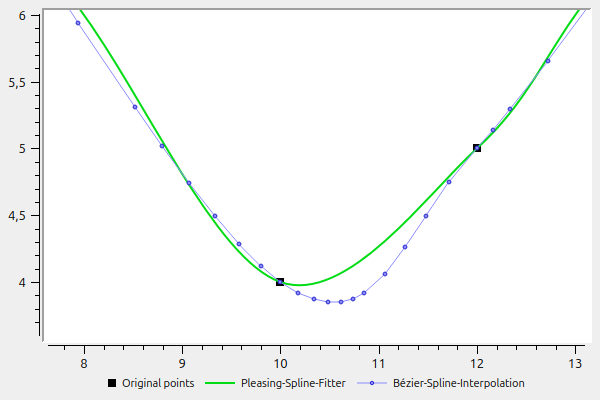
Auch bei QwtSplineLocal(QwtSplineLocal::PChip) mit (testweise veränderten Stützstellen) sieht das so aus:
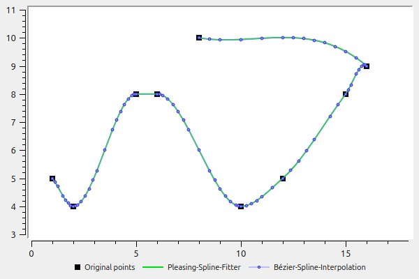
Hineingezoomt erkennt man jedoch Unterschiede:
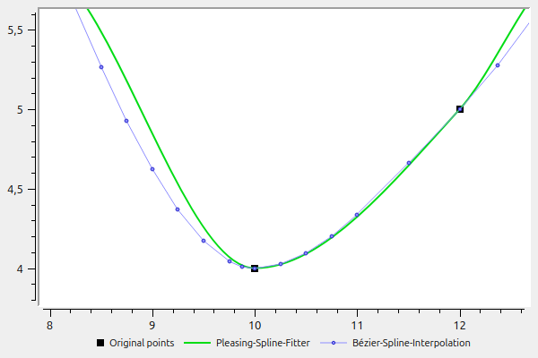
|
Die Generierung der Spline als Polygonzug mittels |
17. Download/Installation/Erstellung der Qwt Bibliothek
17.1. Download fertiger Pakete
17.1.1. Windows/Mac
Auf diesen Plattformen würde ich immer das Bauen aus dem Quelltext empfehlen, da das hinreichend einfach ist (siehe Kapitel 17.2 unten).
17.1.2. Linux
Unter Linux kann man auf die Pakete des Paketmanagers zurückgreifen.
Debian/Ubuntu
Beispielsweise für Ubuntu 24.04:
# Paket mit Headern für die Entwicklung
sudo apt install libqwt-qt5-devHeaderdatei-Pfad: /usr/include/qwt
Für’s Deployment eigener Programme und als Abhängigkeit eigener Pakete reicht es, dass Paket libqwt-qt5-6 zu installieren.
17.2. Erstellung aus dem Quelltext
17.2.1. Windows
-
Release
qwt-6.3.0.zipherunterladen und entpacken. -
Datei
qwtconfig.pribearbeiten und Optionen ein-/ausschalten -
Kommandozeile mit Qt Umgebungsvariablen öffnen, z.B.: Startmenu → Qt 5.15.2 (MinGW 8.1.0 64-bit), oder alternativ in der Commandozeile die benötigten Umgebungsvariablen setzen.
-
Ins Verzeichnis mit der
qwt.prowechseln
In der Commandozeile wird erwartet, dass:
-
der Compiler ausführbar d.h. im Suchpfad ist
-
der QTPATH gesetzt ist
MinGW32/64
Es wird eine MinGW32/64 Installation mit mingw32-make im PATH erwartet.
:: Makefile erstellen
qmake qwt.pro
:: Bibliothek und Plugin/Beispiele bauen
mingw32-make -j8
:: Biblithek installieren
mingw32-make install|
Die |
Visual Studio Compiler
Es gibt verschiedene Compilerversionen, wobei 2017, 2019, 2022 oder VSCode aktuell üblich sind. Eine vorbereitete Kommandozeile öffnet man am Besten über den vorbereiteten Startmenü-Link, welcher für 2019 ungefähr so heißt: Entwickler-Eingabeaufforderung für VS 2019
|
Man muss hier darauf achten, dass man die richtige Variante wählt, also x86 oder x64. |
Alternativ kann man auch eine normale Kommandozeile öffnen und danach die Compilerpfade und Optionen setzen. Hier hilft es, die normalerweise über das Startmenü verknüpfte Batchdatei auszuführen:
"%ProgramFiles(x86)%\Microsoft Visual Studio\2019\Community\Common7\Tools\VsDevCmd.bat" -arch=amd64Gebaut wird mit jom:
:: Makefile erstellen
qmake qwt.pro
:: Bibliothek und Plugin/Beispiele bauen
nmake
:: Biblithek installieren
nmake installInstallationsverzeichnis/Relevante Pfade
Sofern nicht in der Datei qwtconfig.pri ein anderer Installationspräfix in der Variable QWT_INSTALL_PREFIX eingestellt wurde, ist die Bibliothek nach dem Erstellen unter c:\Qwt-6.3.0 installiert:
c:\Qwt-6.3.0\include - Header-Dateien c:\Qwt-6.3.0\lib - Bibliothek/DLLs c:\Qwt-6.3.0\doc\html - API Dokumentation (`index.html` in diesem Verzeichnis öffnen)
17.2.2. Linux/Mac
17.3. Qt Designer Plugins
-
wie erstellt man die Designerplugins und bekommt die in die Komponentenpalette…
17.4. Verwendung des Plots in eigenen Programmen
17.4.1. Windows
17.4.2. Linux/Mac
17.5. Das QwtPlot in eine Designer-Oberfläche/ui-Datei integrieren
Wenn man mittels Qt Designer eine Programmoberfläche baut, möchte man da vielleicht auch ein QwtPlot einbetten. Das kann man auf zwei verschiedene Arten machen:
-
ein QWidget als Platzhalter einfügen und zu einem Platzhalterwidget für das
QwtPlotmachen, oder -
die Qwt-Designer-Plugins verwenden.
17.5.1. Definition eines Platzhalterwidgets
Zur Erklärung wird im Qt Designer ein einfaches Widget entworfen:

Unter der Spinbox wurde ein QWidget eingefügt. Dieses soll nun als Platzhalter für das QwtPlot dienen. Dazu im Kontextmenü des Widgets die Option "Als Platzhalter für benutzerdefinierte Klasse festlegen…" auswählen:

Und im Dialog eine neue Platzhalterklasse wie folgt definieren:
Die Eingabe mit "Hinzufügen" bestätigen und dann auf "Anwenden" klicken, um das Platzhalter-Widget in das QwtPlot zu wandeln. Wir benennen das noch in plot um, und füge das horizontale Layout und das Plotwidget in ein vertikales Layout ein:

Damit sich das Plotwidget den ganzen vertikalen Platz schnappt, wählt man das Top-Level Widget aus und scrollt in der Eigenschaftsleiste bis nach unten zu den Einstellungen für das vertikale Layout. Dort gibt man bei den Stretch-Faktoren "0,1" ein, wodurch sich das 2. Widget im Layout (das Plot) komplett ausdehnt.
17.5.2. Verwendung der Designer-Plugins
Dazu muss man die QtDesigner-Plugins zunächst erstellen und integrieren.
TODO :
Wenn man die erstmal installiert hat, kann man ein QwtPlot direkt aus der Komponentenpalette in den Entwurf zeihen und ist fertig.
18. Über den Autor
-
später, siehe https://schneggenport.de